A Visual Introduction to Information Theory
Though originally developed for communications engineering, information theory provides mathematical tools with broad applications across science and engineering. These tools characterize the fundamental limits of data compression and transmission in the presence of noise. Here, we present a visual, intuition-driven guide to key concepts in information theory, showing how entropy, mutual information, and channel capacity arise from probability and govern these limits. Our presentation assumes only a familiarity with basic probability theory.
A PDF version of this paper is available on arXiv.
1 Introduction
In the 1940s, Claude Shannon [1] showed that a precise mathematical definition of information arises directly from the axioms of probability. Since then, information theory has defined the limits of data compression and reliable data transmission across noisy networks, and forms a foundation for the digital world. Its mathematical tools have found applications in statistics, machine learning, cryptography, quantum computing, biology, and many other areas.
Here we introduce the foundations of information theory, with an emphasis on intuition. This is a minimal introduction to key ideas. A more comprehensive treatment can be found in the excellent textbooks [2], [3] as well as Shannon’s original formulation [1].
Main ideas
Outside information theory, most of us intuitively think of “information" as something close to “knowledge about something unknown." One of the main advances of information theory was to formalize this intuition into something mathematically precise. Shannon himself once said that “information can be treated very much like a physical quantity such as mass or energy."
Shannon made information mathematically concrete by defining it in terms of probability. If a sender is transmitting information to a receiver, that information describes something that would otherwise be unpredictable. From the receiver’s perspective, it is random. Information theory shows that the probability distribution over potential messages is the only thing that matters for transmitting information. The actual content of the messages is irrelevant.
This fact enables us to consider the fundamental concepts in information theory using a generic source of random events: drawing colored marbles from an urn, with each marble representing a possible message from the set of all messages. The mathematics developed on this example applies directly to other areas. The way we describe the randomness of a sequence of colored marbles is the same as how we would describe the randomness of a string of letters in English text, or a sequence of pixels in images from the Hubble telescope.
The fundamental unit of information content is the bit. The word “bit" also describes a container that can hold information: a digit that can be either 0 or 1. The actual information within the container must be defined with respect to some probability distribution, and it could hold less than 1 bit of information in the same way as a 1 liter bottle can be filled with only \(\frac{1}{2}\) liter of water. We avoid this ambiguity by choosing examples where each bit container is “full" with one bit of information. Unless stated otherwise, “bit" here refers to the unit of information.
There are two key problems in information theory that will come up throughout the sections below. The first is source coding, which concerns data compression: Given a source of random events, what are the limits on how succinctly we can record the outcome of a random sequence, on average? This can be further subdivided into the cases where the original sequence can be perfectly reconstructed upon decompression (lossless compression) or the case where some distortion from the original sequence can be tolerated to achieve even smaller data size (lossy compression).
The second problem is channel coding, which concerns data transmission: Given a source of random events, and an imperfect system for transmitting information (a noisy channel), how can we encode a sequence of such events such that they will be robust to errors introduced by the channel? Again, we can subdivide into perfect data transmission, and data transmission with errors.
1.1 Notation
The following notation is used throughout; each symbol is also defined where it first appears.
| \(\mathrm{X}\) | a random variable, which will also be called a “random event" |
| \(x\) | a particular outcome of \(\mathrm{X}\) |
| \(\mathcal{X}\) | the probability space/set of possible outcomes for \(\mathrm{X}\). \(x \in \mathcal{X}\) |
| \(| \mathcal{X} |\) | the number of possible outcomes in the probability space |
| \(p_{\smash{\mathrm{X}}\vphantom{\hat{T}}}(x)\), \(p(\mathrm{X}=x)\) or \(p(x)\) | the probability that the random event \(\mathrm{X}\) has outcome \(x\) |
| \(H(\mathrm{X})\) | the entropy of \(\mathrm{X}\) |
| \(H_{\text{max}}(\mathcal{X})\) | the maximum entropy for the state space \(\mathcal{X}\) |
| \(W(\mathrm{X})\) | the redundancy of \(\mathrm{X}\) |
| \(\mathbf{X} = \mathrm{X_1}, \mathrm{X_2},...\) | a stochastic process: an ordered sequence of random variables |
| \(\mathbf{\mathcal{X}^2} = \mathcal{X}\times\mathcal{X}\) | the state space for (\(x_1\), \(x_2\)) tuples where \(x_1 \in \mathcal{X}, x_2 \in \mathcal{X}\) |
| \(\mathcal{P}_{\mathcal{X}}\) | The set of probability distributions on the space \(\mathcal{X}\) |
| \(\mathbf{p}_{\mathrm{X}}\) | A vector representation of the probabilities of the distribution of \(\mathrm{X}\) |
| \(\mathbf{P}_{\mathrm{X}, \mathrm{Y}}\) | A matrix representation of the joint distribution of \(\mathrm{X}\) and \(\mathrm{Y}\) |
| \(\mathbf{P}_{\mathrm{Y}\mid \mathrm{X}}\) | A matrix representation of conditional distribution \(\mathrm{Y}\) given \(\mathrm{X}\) |
| \(C\) | The channel capacity: |
| the maximum information that can be transmitted by a channel |
2 Core quantities: information, entropy, and mutual information
This section develops the core quantities of information theory. We begin with the connection between probability and information, then define entropy as a measure of average information content. From there, we introduce mutual information to quantify information shared between random events, and conclude with extensions to stochastic processes, continuous distributions, and lossy compression.
2.1 What is information?
Uncertainty, randomness, and a lack of information are different ways of viewing the same underlying idea. If we cannot predict the outcome of an event, we are uncertain, and it is, from our perspective, random. However, we may be able to acquire information about the event that reduces its apparent randomness, making us more certain about it.
What will the weather be like in 3 hours? It’s uncertain. But from now until then, we can continuously acquire information by observing the current weather, and 3 hours from now our uncertainty will have collapsed to zero. It no longer appears random to us.
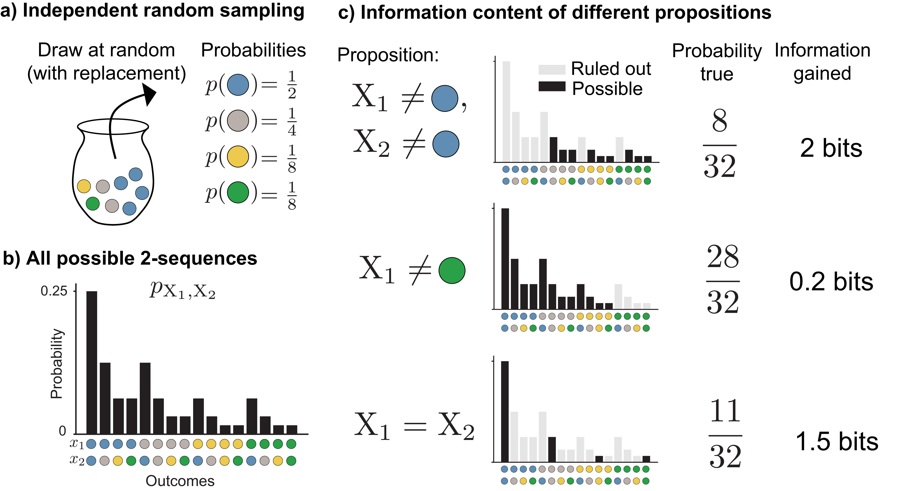
Weather forecasting is not the only area that fits this paradigm. Information theory shows that almost all characteristics of a random event are separable from its information content–all that matters is its probability distribution. Thus, we can consider information theory in the context of a generic random event: repeatedly drawing a marble at random from an urn containing \(\textcolor{blue}{\texttt{blue}}\), \(\textcolor{#009B55}{\texttt{green}}\), \(\textcolor{#FFB528}{\texttt{yellow}}\), and \(\textcolor{gray}{\texttt{gray}}\) marbles. (Figure 1a).
Formally, we have a finite, discrete set of independent and identically distributed (IID) events and a random variable that assigns a probability to each element of the set. These intuitions generalize to the non IID case (Sec. 2.8) and continuous variables and probability density functions (Sec. 2.9).
More common outcomes provide us with less information, and rarer outcomes provide us with more. To understand why, suppose someone has drawn two colored marbles from an urn, but we don’t know what they’ve drawn. We’ll denote these two random events with \(\mathrm{X}_1\) and \(\mathrm{X}_2\). \(\mathrm{X}_1\) and \(\mathrm{X}_2\) have a joint probability distribution \(p_{\smash{\mathrm{X}_1, \mathrm{X}_2}\vphantom{\hat{T}}}\), which tells us the probability of each of the 16 possible two-color sequences (Figure 1b). Suppose we then learn some facts about what was drawn (but not the exact outcome). For example, we might learn that neither marble is \(\textcolor{blue}{\texttt{blue}}\), or the first marble isn’t \(\textcolor{#009B55}{\texttt{green}}\), or the two marbles are different colors (Figure 1c).
Learning each fact allows us to rule out possibilities for the outcome of \(\mathrm{X}_1, \mathrm{X}_2\). The less often the fact is true, the more possible outcomes we can rule out. For example, knowing the two marbles are the same color rules out \(12\) of the \(16\) possible outcomes that correspond to \(\frac{21}{32}\) of probability mass. The more possibilities we can rule out, the more information we’ve gained. Rarer outcomes contain more information.
We can calculate exactly how much information an outcome provides from its probability. Each time we can rule out half of the probability mass, we have gained exactly \(1\) bit of information. In the case where we learn that neither marble is \(\textcolor{blue}{\texttt{blue}}\), we’re left with only \(\frac{1}{4}\) of the probability mass, and we have gained \(2\) bits of information, since we have halved the probability mass twice. The amount of information can be calculated from the probability of the outcome by:
\[\begin{align} \log_2{\frac{1}{p(x)}}\label{point_information_eqn} \end{align}\]
The conventional choice of a base-2 logarithm means that the units will be bits (The 2 will often be omitted in subsequent sections).
We know each outcome’s probability and its information content. Their probability-weighted average is the entropy, denoted \(H(\mathrm{X})\):
\[H(\mathrm{X}) = \sum_{x \in \mathcal{X}} p(x) \log \frac{1}{p(x)}\]
Entropy can be interpreted as how surprising a random event is on average. More random events are more surprising on average, and observing their outcome yields more information. Conversely, higher entropy means more uncertainty to begin with, so we must acquire more information to be certain about the outcome.
Random events with probability spread as evenly as possible over their outcomes have the highest entropy, not those with many extremely rare outcomes. Although rarer outcomes individually contain more information, the decrease in probability of observing them outweighs the increase in per-outcome information, because information scales logarithmically with probability. Section 2.3 discusses maximum entropy distributions in more detail.
2.2 Entropy and data compression
A random variable’s entropy quantifies the limit of how much lossless data compression can be achieved, a problem known as source coding.
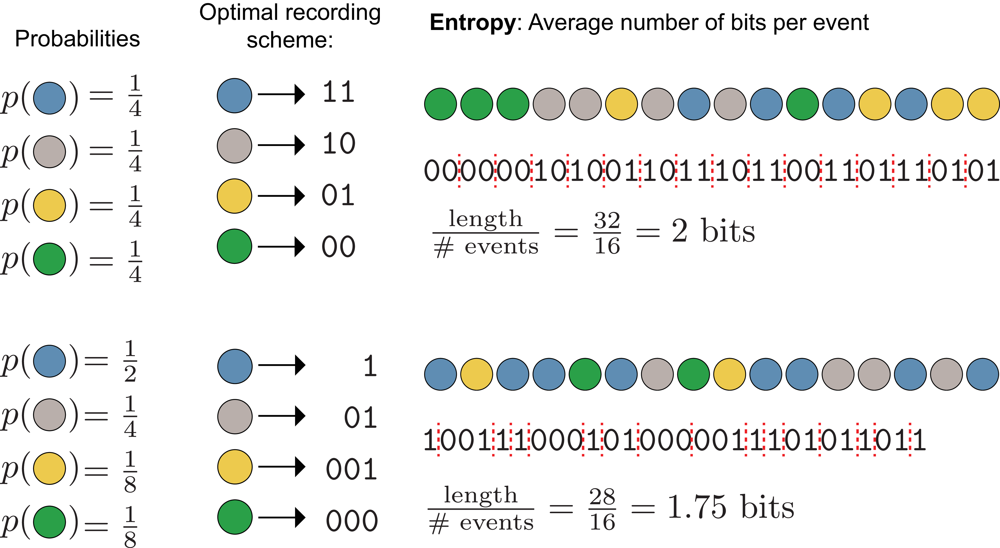
To demonstrate this, we return to the problem of drawing colored marbles from an urn. Now we’re going to draw a sequence of marbles, and record the outcome of each draw using binary codewords, such as 1, 10, etc. Our goal is to choose an encoding scheme that will (on average) yield the shortest possible binary description of our sequence without introducing any ambiguity as to what the outcomes of the draws were. This is a lossless compression problem, and the shortest possible length is determined by the entropy of the random draw.
We want to pick an encoding scheme that matches outcomes (e.g. a \(\textcolor{#009B55}{\texttt{green}}\) marble drawn) to bit strings (e.g. \(\texttt{01}\)), such that the length of the string for a series of random draws is as short as possible. How short we can make this encoding, while still being able to correctly decode our binary encoding into the original sequence, is closely related to the fundamental information content of the sequence: sequences that require longer encodings (on average) contain more information. Thus, the length of the optimal binary recording scheme is determined by the random variable’s entropy–the average information present in a single outcome.
The amount of information and the optimal recording scheme both depend on the probabilities of each outcome. For example, consider a random variable \(\mathrm{X}\) on the outcome space \(\mathcal{X}\) with associated probabilities \(p_{\mathrm{X}}\) (Figure 2, top):
\[\begin{aligned} \mathcal{X} = \{\textcolor{blue}{\texttt{blue}}, \textcolor{gray}{\texttt{gray}}, \textcolor{#FFB528}{\texttt{yellow}}, \textcolor{#009B55}{\texttt{green}} \} \\ p_{\mathrm{X}} = \{\tfrac{1}{4}, \tfrac{1}{4}, \tfrac{1}{4}, \tfrac{1}{4} \} \end{aligned}\]
The shortest lossless encoding scheme given these probabilities is a unique 2 digit binary codeword for each outcome: \(\texttt{00}\), \(\texttt{01}\), \(\texttt{10}\), \(\texttt{11}\), because the average information in each random event (its entropy) is 2 bits.
Alternatively, consider the case where the outcomes are not equally probable (Figure 2, bottom), but instead:
\[\begin{aligned} \mathcal{X} = \{\textcolor{blue}{\texttt{blue}}, \textcolor{gray}{\texttt{gray}}, \textcolor{#FFB528}{\texttt{yellow}}, \textcolor{#009B55}{\texttt{green}} \} \\ p_{\mathrm{X}} = \{\tfrac{1}{2}, \tfrac{1}{4}, \tfrac{1}{8}, \tfrac{1}{8} \} \end{aligned}\]
In this case, even though the outcome still has some randomness, we can more reliably predict the next element of the sequence compared to the case where all probabilities are equal: it is more likely to be \(\textcolor{blue}{\texttt{blue}}\) and less likely to be \(\textcolor{#FFB528}{\texttt{yellow}}\) or \(\textcolor{#009B55}{\texttt{green}}\). Thus, we are more certain and shouldn’t need as much information (on average) to describe the outcomes compared to the previous case.
Accordingly, we can achieve a shorter average binary string length by encoding more probable outcomes with shorter strings and less probable outcomes with longer strings. The shortest, lossless encoding scheme will be to use the codewords \(\texttt{1}\), \(\texttt{01}\), \(\texttt{001}\), \(\texttt{000}\). (This encoding is not unique–we could always swap \(\texttt{0}\)s and \(\texttt{1}\)s). This is an example of a prefix code, which can be uniquely decoded even if the codewords are concatenated one after another, since no codeword is a prefix of another. Dividing the length of the encoding of a series of events by the number of events, we compute that the average information (entropy) in each random event is \(1.75\) bits.
If we instead used the 2 digit binary code, the average encoding would be longer than necessary, introducing redundancy.
Entropy also describes the uncertainty about the outcome of a random variable. If \(p(\textcolor{blue}{\texttt{blue}}) = 1\) and all other probabilities equal \(0\), the entropy is \(0\). In this case there is no uncertainty because we are sure of the outcome even before seeing it.
2.3 Redundancy
Redundancy measures the gap between a random event’s entropy and the maximum possible entropy on its probability space. The maximum entropy is achieved by the maximum entropy distribution \(H_{\text{max}}(\mathcal{X})\), in which all outcomes are equally probable (Figure 2, top). Equal probabilities yield the most uncertain outcome and the longest possible optimal binary encoding.
By setting the probability of all events equal in a particular probability space, we find that maximum entropy is equal to the log number of possible states:
\[H_{\text{max}}= \log_2{| \mathcal{X} |}\]
Where \(| \mathcal{X} |\) is the number of elements in the set \(\mathcal{X}\). The larger the number of elements in \(\mathcal{X}\), the more uncertain we can potentially be about what value it will take.
The redundancy \(W\) is the difference between this maximum entropy and the actual entropy of the random variable:
\[\begin{aligned} W(\mathrm{X}) = H_{\text{max}}(\mathcal{X}) - H(\mathrm{X}) \end{aligned}\]
2.4 General data compression limits
We’ve made two convenient choices in Figure 2 to illustrate entropy clearly; neither will necessarily hold in general.
First, we’ve chosen the probabilities to be all of the form \(\frac{1}{2^{k}}\) where \(k\) is a positive integer. This makes the information in each event equal to an integer number of bits, which means we can fully compress the sequence by encoding each event individually. If we hadn’t done this, the information content of a single event might equal something like \(\frac{3}{4}\) bits, and encoding in a one digit binary string would waste \(\frac{1}{4}\) bits of space and yield a redundant binary representation. This technicality is why the entropy is in general less than or equal to the expected length of the shortest binary encoding, rather than always exactly equal. We’ve specifically picked the case where it is equal for illustrative purposes. It is possible to get closer to this bound in the more general case by encoding sequences of multiple events together into a single binary string, otherwise known as block encoding.
The second simplification we’ve made is that the random sequences of colors we’ve chosen are made up of exactly the expected number of each color. For example, the bottom sequence is half (\(\frac{8}{16}\) events) \(\textcolor{blue}{\texttt{blue}}\), a quarter (\(\frac{4}{16}\) events) \(\textcolor{gray}{\texttt{gray}}\), etc. In reality, different random sequences might yield binary strings with very different lengths. For example, a sequence of all \(\textcolor{blue}{\texttt{blue}}\) (which happens to be the most probable sequence) would have a 16 bit binary encoding, while a string of all greens (one of the least probable sequences) would yield a 48 bit binary encoding. These sequences in Figure 2 are called typical sequences.
2.4.1 Typical sequences
A typical sequence is an outcome which has information close to the entropy of random event to which it belongs. The typical set is the set of all such typical sequences, which is usually a small subset of all possible sequences. For a sequence of \(N\) independent and identically distributed random variables \(\mathrm{X}_1, \mathrm{X}_2,...,\mathrm{X}_N\), the average information content is \(H(\mathrm{X}_1) + H(\mathrm{X}_2) +... + H(\mathrm{X}_N) = NH(\mathrm{X})\). For a small positive number \(\epsilon\), a typical sequence is one that satisfies:
\[\begin{aligned} H(\mathrm{X}) - \epsilon \leq -\frac{1}{N} \log p(x_1,x_2,...,x_N)\leq H(\mathrm{X}) + \epsilon \end{aligned}\]
Does the choice of \(\epsilon\) matter? For the sequences in Figure 2, we’ve conveniently avoided this question since the sequences shown have an information content exactly equal to \(NH(\mathrm{X})\). As \(N \rightarrow \infty\), the choice becomes irrelevant, because all of the probability mass concentrates on the typical set defined with any positive value of \(\epsilon\) (Figure 3). All typical sequences occur with approximately the same probability: \(\approx 2^{-NH(\mathrm{X})}\).
Since the total probability is \(1\) and each typical sequence occurs with probability \(\approx 2^{-NH(\mathrm{X})}\), there must be \(\approx 2^{NH(\mathrm{X})}\) typical sequences. This result is the asymptotic equipartition property (AEP), a direct consequence of the Law of Large Numbers. It is used to prove many important theorems in information theory.
To summarize, the AEP says that with infinite sequence length, we can ignore the vanishingly small probability that falls on non-typical sequences. As a result, we can focus on the typical set of \(\approx 2^{NH(\mathrm{X})}\) sequences, which each occur with probability \(\approx 2^{-NH(\mathrm{X})}\).
Lossless compression of a length-\(N\) sequence requires \(NH(\mathrm{X})\) bits. A compression scheme encoding only the typical set would need \(\log_2 2^{NH(\mathrm{X})} = NH(\mathrm{X})\) bits for unique binary strings. Since negligible probability mass falls outside the typical set, this scheme is lossless as \(N \rightarrow \infty\). Fewer bits would force different typical sequences to map to the same binary string. More bits would waste space on non-typical sequences that occur with nearly zero probability.
The typical set is useful for theoretical work because the number of sequences it contains can be counted, but it does not include the most probable individual sequences. For example, in Figure 3b, the sequence for each \(N\) that consists of \(N\) \(\textcolor{blue}{\texttt{blue}}\)s in a row is the most probable sequence, but would be omitted from the typical set for a small value of \(\epsilon\). For any finite \(N\) you could improve the compression algorithm described above by taking the binary string used for the least probable typical sequence and instead using it for the sequence of all \(\textcolor{blue}{\texttt{blue}}\). In practical situations (i.e. \(N < \infty\)), better compression can be achieved by designing for the set of most probable sequences. As \(N \rightarrow \infty\), this becomes less and less true, because the most probable sequences contain vanishingly small total probability mass.
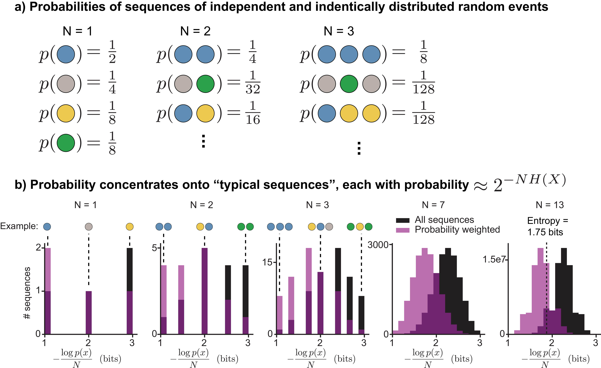
The relationship between entropy and redundancy, probability distributions, and typical sequences are shown in Figure 4.
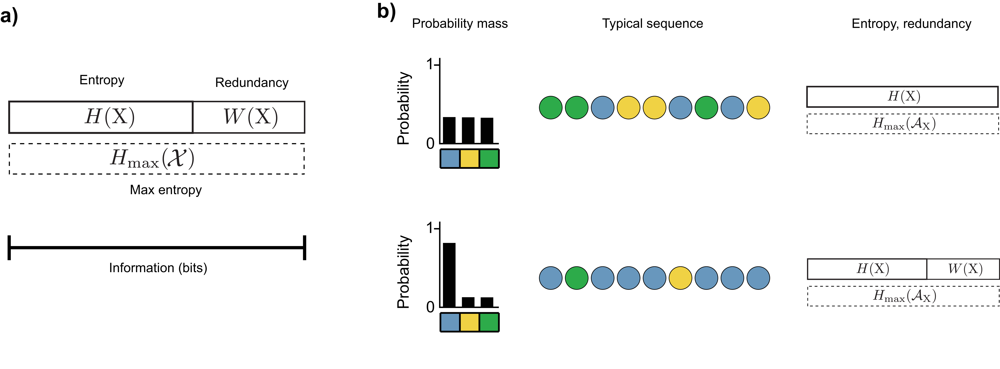
2.5 Mutual information
Having described how to quantify the information content of a random event, we now consider how information can be shared among multiple random events: how much does knowing the outcome of one random event reduce uncertainty about another? This provides the basis for reasoning about information transmission.
Consider the scenario of drawing not colored marbles, but colored objects from an urn. We have the same four possible colors, \(\textcolor{blue}{\texttt{blue}}\), \(\textcolor{#009B55}{\texttt{green}}\), \(\textcolor{#FFB528}{\texttt{yellow}}\), and \(\textcolor{gray}{\texttt{gray}}\), and now there are also four possible object shapes: \(\blacklozenge\), \(\blacktriangle\), \(\bigstar\), and \(\mathlarger{\mathlarger{\mathlarger{\bullet}}}\). Our random draws will now be shape-color combinations like \(\color{blue}{\blacktriangle}\), \(\color{#009B55}{\blacklozenge}\), \(\color{#FFB528}{\blacklozenge}\), etc. \(\mathrm{X}\) will still represent the object’s color, and now we’ll also use \(\mathrm{Y}\) to represent its shape. The random event of drawing a particular shape with a particular color is \(\mathrm{X}, \mathrm{Y}\), and its value is governed by the joint probability distribution over \(\mathcal{X} \times \mathcal{Y}\), the outcome space of all shape/color combinations.
Suppose that we do not observe which object was drawn, but only a black and white photograph of the object in which all colors look the same. What can we say about the object’s color (\(\mathrm{X}\)), having only observed its shape \(\mathrm{Y}\)? In other words, how much information does its shape convey about its color? The answer to this question is determined by the mutual information between \(\mathrm{X}\) and \(\mathrm{Y}\).
Mutual information, denoted \(I(\mathrm{X}; \mathrm{Y})\), quantifies how well we can discriminate alternative possibilities of an unknown random event \(\mathrm{X}\) based on observing some other random event \(\mathrm{Y}\). It measures how much of the information gained from observing \(\mathrm{Y}=\blacktriangle\) reduces our uncertainty about the object’s color, \(\mathrm{X}\). The minimum possible value is \(I(\mathrm{X}; \mathrm{Y})=0\), which means that \(\mathrm{X}\) and \(\mathrm{Y}\) are independent–observing shape does not reduce uncertainty about color at all. The maximum possible value is the lesser of \(H(\mathrm{X})\) and \(H(\mathrm{Y})\), because a random event can neither convey more information about another event than it itself contains, nor more than the other event contains. Mutual information is symmetric: \(I(\mathrm{X}; \mathrm{Y}) = I(\mathrm{Y}; \mathrm{X})\).
Another common way of quantifying dependence between two variables is through correlation. Mutual information generalizes correlation: unlike correlation, which usually captures only linear relationships, mutual information captures any statistical dependency between two variables.
To compute mutual information, we need to know the joint probability distribution of the two variables \(\mathrm{X}\) and \(\mathrm{Y}\). That is, we need to know which shapes come in which colors. For a particular draw, say \(\color{blue}{\bigstar}\), we can calculate the amount of information that the color and shape convey about one another using the point-wise mutual information:
\[\begin{aligned} \log \left( \frac{p(x, y)}{p(x)p(y)} \right) \end{aligned}\]
Point-wise mutual information is analogous to the information of a single outcome. It can be rewritten in a few different ways, which allow for different interpretations. For example:
\[\begin{aligned} \log \left( \frac{p(x, y)}{p(x)p(y)} \right) &= \log \left( \frac{p(x \mid y)}{p(x)} \right) \\ &= \log p(x \mid y) - \log p(x) \\ &= \log \frac{1}{p(x)} - \log \frac{1}{p(x \mid y)} \end{aligned}\]
The final line can be interpreted as the surprise of the outcome \(x\) minus the surprise of \(x\) when \(y\) is already known. If knowledge that \(\mathrm{Y}= y\) makes \(\mathrm{X}= x\) less surprising, then \(\frac{1}{p(x \mid y)}\) will decrease, reflecting that \(y\) tells us something about the value of \(x\). For example, if there are many different colors of objects, but all \(\bigstar\)’s are \(\textcolor{blue}{\texttt{blue}}\), then learning the object is a \(\bigstar\) will eliminate all uncertainty about its color: \(p({\color{blue}{\bigstar}} \mid \bigstar) = 1\). This means that in this case all of the information provided by the outcome \(\mathrm{X}= \textcolor{blue}{\texttt{blue}}\) is shared by \(\mathrm{Y}= \bigstar\).
By taking a probability-weighted average of the point-wise mutual information over all possibilities, we arrive at the mutual information, which represents the average amount of information provided from the outcome of one random event that is relevant to another. Mathematically:
\[\begin{aligned} I(\mathrm{X}; \mathrm{Y}) = \sum_{x \in \mathcal{X}} \sum_{y \in \mathcal{Y}} p(x, y)\log \left( \frac{p(x, y)}{p(x)p(y)} \right) \end{aligned}\]
Just as in Figure 1, when one bit of information meant we could rule out half of the probability mass, for each bit of mutual information between \(\mathrm{X}\) and \(\mathrm{Y}\), we can eliminate half of the probability mass of one random event after observing the outcome of the other. This is most easily seen if all outcomes are equally probable, because in this case eliminating half of the probability mass corresponds to eliminating half of the outcomes.
Three scenarios with varying amounts of mutual information, along with four ways of visualizing the relationships between the two variables, are shown in Figure 5. When \(I(\mathrm{X}; \mathrm{Y}) = 0\) bits, observing the object’s shape does not allow us to eliminate any possibilities of the object’s color. A mutual information of 0 between two random variables is equivalent to those two random variables being independent. Alternatively, when \(I(\mathrm{X}; \mathrm{Y}) = 1\) bit, after observing the shape only, we can eliminate two of the four possible colors. Finally, when \(I(\mathrm{X}; \mathrm{Y}) = 2\), we can eliminate 3 of the four possible colors and know exactly what color it is. In this case, we have gained all 2 bits of information that were present in \(\mathrm{X}\).
Since we can at most gain 2 bits from observing 1 of 4 possible shapes (i.e. \(H_{\text{max}}(\mathcal{Y}) = 2\)), if there were more than 2 bits of information in \(\mathrm{X}\), we wouldn’t be able to determine color exactly. For example, if there were 8 possible colors that were all equally probable, we could not uniquely identify all possibilities based on 4 possible shapes.

2.6 Joint and conditional entropy
Entropy and mutual information describe the uncertainty of a single random event and the information shared between two events. Two related quantities complete the picture: conditional entropy, which measures how much uncertainty remains about one event after observing another, and joint entropy, which measures the total uncertainty when describing two events together. These quantities are essential for reasoning about information transmission, where we need to know not just how much information a signal carries, but how much of it survives after passing through a noisy process.
2.6.1 Conditional entropy
Mutual information quantifies how much knowing the outcome of one random event reduces uncertainty about a second random event, while conditional entropy quantifies how much uncertainty remains about the second random event. Adding the two together gives the total uncertainty of the second random event on its own.
Once again, we start with an example in the point-wise case, where the information gained by learning the outcome of a random event \(\mathrm{X}\) after already knowing the outcome of a second random event \(\mathrm{Y}=y\) is:
\[\begin{aligned} \log \frac{1}{p(x \mid y)} \end{aligned}\]
Or, in the specific case of learning an object is \(\textcolor{#009B55}{\texttt{green}}\) after knowing it is a \(\mathlarger{\mathlarger{\mathlarger{\bullet}}}\):
\[\begin{aligned} \log \frac{1}{p({\color{#009B55}{\texttt{green}}} \mid \mathlarger{\mathlarger{\mathlarger{\bullet}}})} \end{aligned}\]
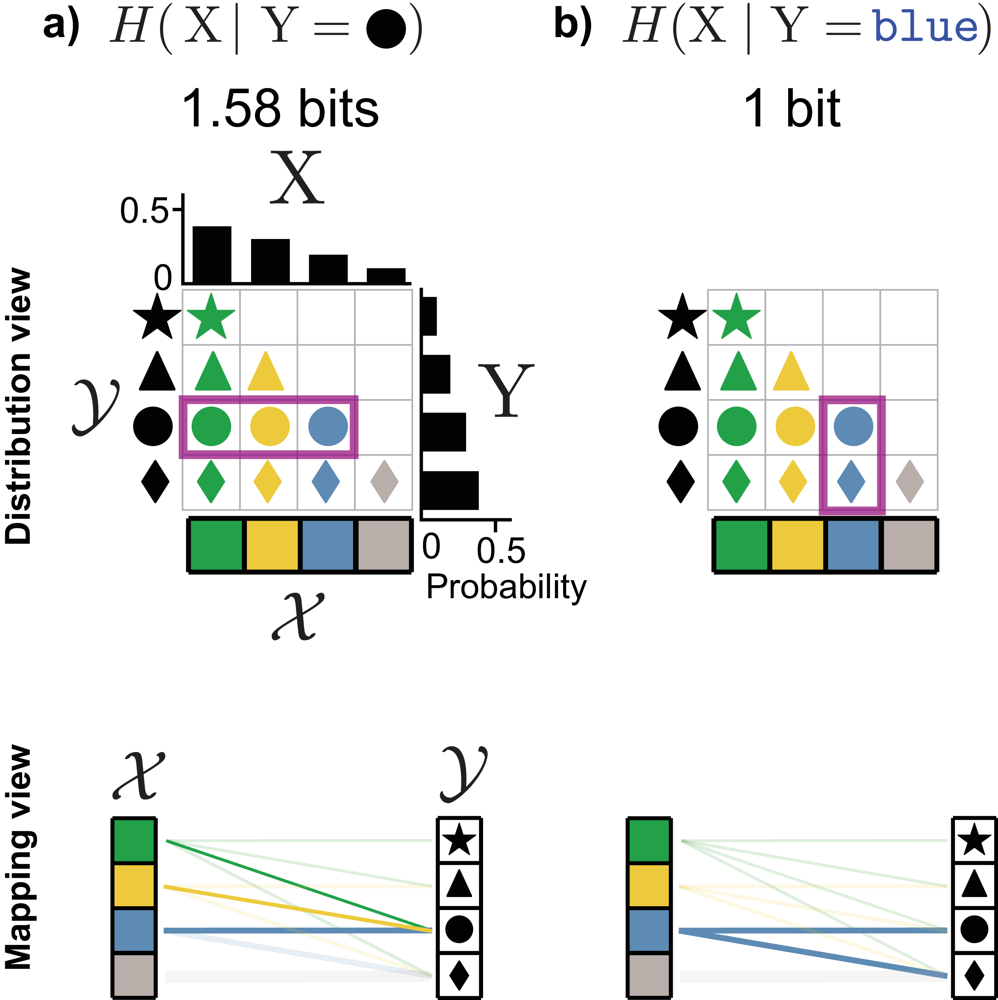
The surprise of finding a \(\textcolor{#009B55}{\texttt{green}}\) \(\color{#009B55}{\mathlarger{\mathlarger{\mathlarger{\bullet}}}}\) depends on how many different colors of \(\mathlarger{\mathlarger{\mathlarger{\bullet}}}\) are in our set of objects. In the same way we calculated entropy as a probability-weighted average of all possible outcomes of a random event, we can similarly compute an average uncertainty of the object’s color, given that the object is a \(\mathlarger{\mathlarger{\mathlarger{\bullet}}}\) (Figure 6a). This yields the point-wise conditional entropy:
\[\begin{align} \label{conditional_entropy_point} H(\mathrm{X}\mid \mathlarger{\mathlarger{\mathlarger{\bullet}}}) = \sum_{\substack{x \in \{\textcolor{#009B55}{\texttt{green}}, \textcolor{blue}{\texttt{blue}} , \\ \textcolor{#FFB528}{\texttt{yellow}}, \textcolor{gray}{\texttt{gray}}\}}} p(x \mid \mathlarger{\mathlarger{\mathlarger{\bullet}}}) \log \frac{1}{p(x \mid \mathlarger{\mathlarger{\mathlarger{\bullet}}})} \end{align}\]
Which can also be written in the generic form as:
\[\begin{aligned} H(\mathrm{X}\mid y) = \sum_{x \in \mathcal{X}} p(x \mid y) \log \frac{1}{p(x \mid y)} \end{aligned}\]
Looking at the joint distribution in the middle row of Figure 5a, knowing that the object is a \(\mathlarger{\mathlarger{\mathlarger{\bullet}}}\) leaves three possible colors: green, yellow, or blue. Since we’ve specified that these occur with equal probability, the point-wise conditional entropy will be \(\log_2 3 \approx 1.58\) bits.
Alternatively, if we looked at the conditional entropy of color given that the object is a \(\bigstar\), the only possible color would be green. This means the point-wise conditional entropy is 0–we know the value of \(\mathrm{X}\) exactly given \(\mathrm{Y}\).
Next, we might want to consider the average uncertainty of color, conditional not specifically on \(\blacklozenge\), but averaged over all possible shapes. To do so, we’ll sum equation \(\eqref{conditional_entropy_point}\) over all possible states in \(\mathcal{Y}\) (e.g. \(\bigstar\),\(\blacklozenge\),\(\blacktriangle\),\(\mathlarger{\mathlarger{\mathlarger{\bullet}}}\)), weighting by the probability of each shape. The generic form of this is:
\[\begin{aligned} H(\mathrm{X}\mid \mathrm{Y}) &= \sum_{y \in \mathcal{Y}} p(y) \sum_{x \in \mathcal{X}} p(x \mid y) \log \frac{1}{p(x \mid y)} \end{aligned}\]
With some slight algebraic manipulation, we get to the traditional equation for conditional entropy:
\[\begin{align} % \label{cond_ent_eqn} H(\mathrm{X}\mid \mathrm{Y}) = \sum_{y \in \mathcal{Y}} \sum_{x \in \mathcal{X}} p(x, y) \log{\frac{1}{p(x \mid y)}} \end{align}\]
When \(H(\mathrm{X}\mid \mathrm{Y})=0\), after observing the outcome of \(\mathrm{Y}\) we know exactly what the outcome of \(\mathrm{X}\) is – there is no remaining uncertainty. Alternatively, if \(H(\mathrm{X}\mid \mathrm{Y})>0\) then the outcome of \(\mathrm{X}\) is not fully known having observed \(\mathrm{Y}\), at least for some outcomes of \(\mathrm{Y}\).
2.6.2 Joint entropy
Joint entropy is an extension of entropy to multiple random variables, which takes into account the dependence between them (i.e. the mutual information):
\[\begin{aligned} H(\mathrm{X}, \mathrm{Y}) = \sum_{x \in \mathcal{X}} \sum_{y \in \mathcal{Y}} p(x, y) \log{\frac{1}{p(x, y)}} \end{aligned}\]
For example, in Figure 5, \(p(x,y)\) represents the probability of a particular shape-color combination.
When \(\mathrm{X}\) and \(\mathrm{Y}\) are independent, observing the value of \(\mathrm{Y}\) provides no information about \(\mathrm{X}\). Thus, \(H(\mathrm{X}, \mathrm{Y}) = H(\mathrm{X}) + H(\mathrm{Y})\). This can be proven algebraically by substituting \(p(x,y) = p(x)p(y)\) into the joint entropy formula, as shown in Appendix 8.1. This can be equivalently expressed as \(p(y) = p(y \mid x)\) or \(p(x, y) = p(x)p(y)\).
When \(\mathrm{X}\) and \(\mathrm{Y}\) are dependent, the joint entropy will be less than the sum of the individual entropies, since there will be nonzero mutual information. For example, in the top row of Figure 5, \(H(\mathrm{X}) = 2\), \(H(\mathrm{Y}) = 2\), but \(H(\mathrm{X}, \mathrm{Y}) = 2\) also, since the 2 bits are mutual to both random variables.
2.7 Relationships between entropy and mutual information
Entropy, joint entropy, conditional entropy, and mutual information can be described in terms of each other. Their relationships are summarized in Figure 7. Entropy is the average uncertainty in a single random event. Mutual information is the amount of that uncertainty in common with another random event through some statistical relationship. Conditional entropy is the remaining uncertainty in one random event after subtracting the mutual information shared with another. Joint entropy is the average uncertainty when describing both random events together.
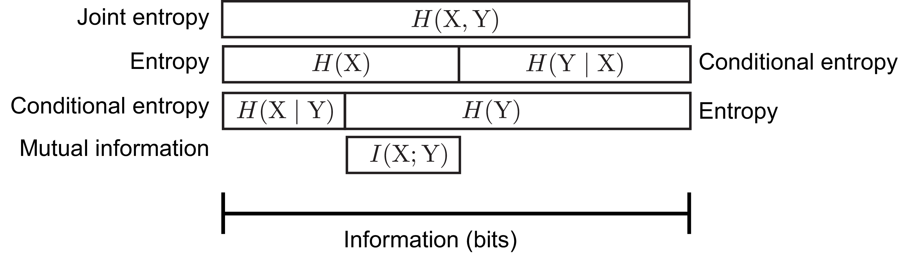
Mutual information can be written in three different ways in terms of the other entropies:
\[\begin{aligned} I(\mathrm{X}; \mathrm{Y}) &= H(\mathrm{Y}) - H(\mathrm{Y}\mid \mathrm{X}) \\ &= H(\mathrm{X}) - H(\mathrm{X}\mid \mathrm{Y}) \\ &= H(\mathrm{X}) + H(\mathrm{Y}) - H(\mathrm{X}, \mathrm{Y}) \end{aligned}\]
An example of how \(I(\mathrm{X}; \mathrm{Y})\) can be manipulated into these other forms can be found in Appendix 8.2.
The first two can be interpreted as the average uncertainty in one random event after subtracting the uncertainty that remains having observed a different random event. The third can be interpreted as the total uncertainty of both random events in isolation minus the uncertainty of both considered together.
2.8 Entropy rate of stochastic processes
Thus far, we’ve discussed only the case in which the source of information is an independent and identically distributed (IID) random variable, but the information theoretic concepts we’ve introduced generalize to non-independent ordered sequences of random variables, also known as stochastic processes.
In the IID case, we have a random variable \(\mathrm{X}\), which has some probability density/mass function \(p_{\smash{\mathrm{X}}\vphantom{\hat{T}}}(x)\). A sequence of events can be represented by the random vector \(\boldsymbol{\mathrm{X}}= (\mathrm{X}_1, \mathrm{X}_2,...)\), which is an ordered sequence of random variables. Its joint probability density/mass function is denoted \(p_{\smash{\boldsymbol{\mathrm{X}}}\vphantom{\hat{T}}}(\mathbf{x}) = p_{\smash{\mathrm{X}_1, \mathrm{X}_2,...}\vphantom{\hat{T}}}(x_1, x_2,...)\). The IID assumption allows us to simplify this expression by factoring the joint distribution and writing each term as the shared probability density/mass function of \(\mathrm{X}\):
\[\begin{aligned} p_{\smash{\boldsymbol{\mathrm{X}}}\vphantom{\hat{T}}}(\mathbf{x}) &= p_{\smash{\mathrm{X}_1, \mathrm{X}_2,...}\vphantom{\hat{T}}}(x_1, x_2,...) \\ &= p_{\smash{\mathrm{X}}\vphantom{\hat{T}}}(x_1)p_{\smash{\mathrm{X}}\vphantom{\hat{T}}}(x_2)... \end{aligned}\]
Entropy is additive for independent random variables, so the entropy of \(\boldsymbol{\mathrm{X}}= (\mathrm{X}_1, \mathrm{X}_2,... \mathrm{X}_N)\) will be equal to \(N\) times the entropy of \(\mathrm{X}\). Thus, \(H(\mathrm{X})\), the entropy per event, is called the entropy rate of the process. This quantity is important because if we are trying to transmit information through sequential uses of a communication channel, our channel will need to be able to keep up with this rate (as discussed in greater depth in section 4.2.2).
Alternatively, suppose that this IID assumption does not hold. What is the entropy rate of a stochastic process with an arbitrary joint probability distribution? There are two ways we might do this, and under certain assumptions, they are equivalent ([3] Sec. 4.2).
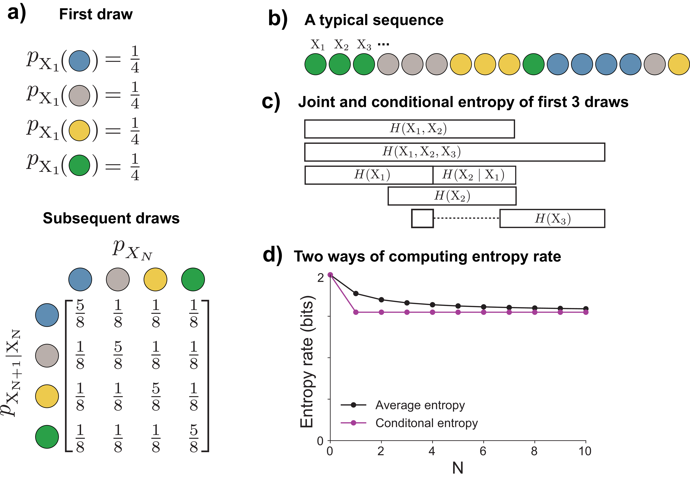
Returning to the example of drawing marbles, suppose we are drawing from a magical urn that, the first time we draw from it, will give all four colors with equal probability. After the first draw, the magic kicks in, and the urn makes it more likely that we will again draw the same color as our previous draw. For example, the conditional probability \(p_{\smash{\mathrm{X}_{N + 1} \mid \mathrm{X}_{N}}\vphantom{\hat{T}}}(\textcolor{blue}{\texttt{blue}} \mid \textcolor{blue}{\texttt{blue}}) = \frac{5}{8}\), while \(p_{\smash{\mathrm{X}_{N + 1} \mid \mathrm{X}_{N}}\vphantom{\hat{T}}}(\textcolor{#009B55}{\texttt{green}} \mid \textcolor{blue}{\texttt{blue}}) = \frac{1}{8}\) (Figure 8a). If we write out all the possible conditional probabilities, we will get a matrix where each column represents the conditional distribution \(p_{\smash{\mathrm{X}_{N+1} \mid \mathrm{X}_N}\vphantom{\hat{T}}}\). A typical sequence from this distribution will tend to give repeats of the same color (Figure 8b).
What can we say about uncertainties in this process? We are more uncertain about the color of the first draw \(\mathrm{X}_1\) (all colors with \(\frac{1}{4}\) probability) than we are about the second color after observing the first (\(\frac{5}{8}\) chance of the same color again). This means that \(H(\mathrm{X}_1) > H(\mathrm{X}_2 \mid \mathrm{X}_1)\) (Figure 8c). Knowing \(\mathrm{X}_1\) reduces our uncertainty about the value of \(\mathrm{X}_2\), and similarly knowing \(\mathrm{X}_2\) would reduce our uncertainty about the value of \(\mathrm{X}_1\). This means that the joint entropy is less than the sum of the individual entropies \(H(\mathrm{X}_1, \mathrm{X}_2) < H(\mathrm{X}_1) + H(\mathrm{X}_2)\).
What about the entropy rate of the process? There are two ways we could define this. First, we could simply say that the entropy rate is our average uncertainty over all draws. This can be quantified by dividing the joint entropy by the number of draws to get an average of the information in each draw:
\[\begin{align} \frac{1}{N} H(\mathrm{X}_1, \mathrm{X}_2,...\mathrm{X}_N) \label{entropy_rate_average} \end{align}\]
Alternatively, we could say that the entropy rate is our uncertainty about the next draw, given the previous ones. This is quantified with the conditional entropy:
\[\begin{align} H(\mathrm{X}_{N+1} \mid \mathrm{X}_{N}, \mathrm{X}_{N-1},... \mathrm{X}_{1}) \label{entropy_rate_cond} \end{align}\]
Under our example, \(\eqref{entropy_rate_average}\) will gradually decrease as \(N\) increases, as our high uncertainty about the first draw has a proportionally smaller and smaller effect compared to the subsequent, more predictable draws.
For the second definition, since our model specifies that draw \(N+1\) only depends on the outcome of draw \(N\) (a type of model called a Markov chain), \(\eqref{entropy_rate_cond}\) will simplify to:
\[\begin{aligned} H(\mathrm{X}_{N+1} \mid \mathrm{X}_{N}) \end{aligned}\]
Thus, it will have a large value for \(\mathrm{X}_1\) and then be slightly lower and stay constant for all subsequent draws.
As \(N \rightarrow \infty\), both measures will converge to the same value for the entropy rate because the high uncertainty of the first draw is ultimately neglected for both, so the two definitions are equivalent in the limit. This will be true whenever the stochastic process is stationary, which means that its joint probability distribution is shift-invariant. Mathematically, a stationary process has the property:
\[\begin{aligned} p_{\smash{\mathrm{X}_{N + 1} \mid \mathrm{X}_{N}, \mathrm{X}_{N-1}, ...}\vphantom{\hat{T}}} = p_{\smash{\mathrm{X}_{N + 1 + k} \mid \mathrm{X}_{N + k}, \mathrm{X}_{N-1 + k}, ...}\vphantom{\hat{T}}} \end{aligned}\]
Where k is some arbitrary integer.
It is often useful to consider stationary processes in an asymptotic sense. For example, the process in Figure 8 is not stationary in that \(p_{\mathrm{X}_2 \mid \mathrm{X}_1} \neq p_{\mathrm{X}_{102} \mid \mathrm{X}_{101}}\). However, as \(N \rightarrow \infty\) these differences disappear.
2.8.1 Redundancy and stochastic processes
Moving from a sequence of independent and identically distributed random variables to a stochastic process requires revisiting the definition of redundancy provided in section 2.3. We can no longer define redundancy with respect to only the entropy of a single random variable in the sequence (e.g. \(H(\mathrm{X}_k)\)). The more general definition of redundancy must account for the joint entropy:
\[\begin{aligned} W(\boldsymbol{\mathrm{X}}) = H_{\text{max}}(\mathcal{X}\times\mathcal{X}\times...) - H(\mathrm{X}_1, \mathrm{X}_2,...) \end{aligned}\]
Redundancy now depends on higher-order interactions between variables, not just on each variable’s individual distribution. In the example above \(H(\mathrm{X}_k) = H_{\text{max}}(\mathcal{X})\), all colors are equally likely for every draw in the absence of any information about the outcomes of other draws. But the joint distribution in our example is not the maximum entropy distribution, because the information present in the distribution of one random variable is shared by others. This manifests in our ability to do much better than random chance in guessing the next color in a sequence given knowledge of the previous ones. The maximum entropy joint distribution would be independent and identically distributed random events, each of which has equal probability over all of its states.
2.9 Probability densities and differential entropy
The examples above all considered probability mass functions over finite, discrete sets of events. How do the formulae and interpretations generalize to cases other than this, such as probability density functions defined over the infinite real line?
For probability densities that are defined over the continuous real line (e.g. the normal distribution, the exponential distribution), we can define an analog to entropy called the differential entropy, replacing the discrete sum with an integral:
\[\begin{align} H(\mathrm{X}) = -\int_{\mathcal{X}}p(x)\log p(x)dx \label{diff_entropy} \end{align}\]
where \(p(x)\) is the probability density function of X.
The differential entropy does not have the same clear interpretations as the discrete entropy. In particular, it cannot be interpreted as the number of bits needed to describe the outcome of a random variable with that probability density. In fact, it takes an infinite number of bits to describe a real number with arbitrary precision. The differential entropy can also take negative values unlike its discrete counterpart. Finally, as is pointed out in ([2] p180), equation \(\eqref{diff_entropy}\) is actually improper in the sense that it takes the logarithm of a dimensional quantity, the probability density (which has units \(\frac{1}{x}\)). For this reason, the value of differential entropy will change when units change.
One way to resolve these difficulties is to convert the continuous probability density into a discrete probability mass function by dividing the real line into equally spaced intervals with width \(\Delta\) and integrating the probability density within each interval to get a probability mass function ([3] section 8.3). One can then compute the discrete entropy of this distribution, which will be equal to the differential entropy minus \(\log \Delta\). In other words, the more fine grained our discretization of the probability density, the more bits are needed to describe it. In many cases we may work directly with such discretized probability densities on a computer, and it is important to remember that the absolute value of the entropy depends on an additive factor based on our arbitrary choice of discretization interval.
The maximum entropy distribution for a given state space also works differently in the case of continuous probability densities. If our state space \(\mathcal{X}\) is the set of real numbers \(\mathbb{R}\), then the entropy can be driven infinitely high by making an infinitely wide distribution. However, we can still describe a maximum entropy distribution under certain constraints. For example, the maximum entropy distribution on \(\mathbb{R}\) with a variance equal to \(\sigma^2\) is a normal distribution with that variance. Many commonly used distributions are optimal under similar constraints, and maximum entropy distributions have many important applications in statistical inference and statistical physics that are beyond our scope here.
Luckily, the mutual information of two continuous probability densities does not suffer from the same mathematical difficulties and lack of clear interpretability. Even though it may take an infinite number of bits to specify an arbitrary real number, the interpretation that \(1\) bit of information allows you to rule out half of the probability mass remains valid. Mathematically, mutual information in the case of probability densities is equivalent to the discrete case, with the sums replaced by integrals:
\[\begin{aligned} I(\mathrm{X}; \mathrm{Y}) = \int_{\mathcal{X}} \int_{\mathcal{Y}} p(x, y)\log \left( \frac{p(x, y)}{p(x)p(y)} \right) dxdy \end{aligned}\]
The mutual information also avoids the problem of the improper logarithm of the differential entropy, because for mutual information, the log is taken on the ratio of densities, in which the units cancel out. Mutual information can also be computed between discrete and continuous random variables [4].
In summary, in spite of the difficulties associated with the differential entropy over probability densities, mutual information retains its usefulness and a clear interpretation as the amount of information one random variable provides about another.
2.10 Rate distortion theory
What happens if we try to compress data to a size smaller than its information content, or infer the outcome of a random event about which we have incomplete information? These questions can be answered by rate-distortion theory.
One application area of rate distortion theory is in lossy compression, where we’re trying to compress some source of events to the smallest size possible, but we’re willing to tolerate some level of error upon decompression. That is, the decompressed message will be “close to" but not exactly the same as the compressed source. Because we can tolerate some error, we need not preserve all of the information about the source in the message.
Figure 9 provides an example of this. We have some source of information, like the equally probable (maximum entropy) four-color marble scenario of Figure 2. We’ll take a series of random colors from this source, and pass it into a deterministic compressor function, which will map it to a binary string. Next, we pass that binary string into a deterministic decompressor function, which tries to reproduce the original string. We want our compressor to map the sequence to the shortest binary string possible (on average). In lossless compression (Figure 9a), we impose the requirement that the decompressed binary string must match exactly the original sequence. In lossy compression (Figure 9b), we’re willing to tolerate some errors upon decompression, which will allow us to discard some of the source information and achieve an even shorter binary encoding.
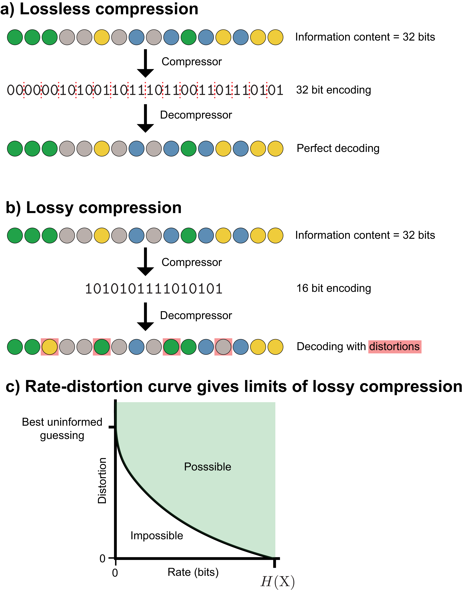
There is a trade-off between how much information we discard and how many errors will be present after decompression: the more information we throw away, the shorter a binary encoding we can make, but the more errors we will make upon decompression. The rate-distortion curve quantifies this trade-off. The rate quantifies the amount of information we have about the source, and distortion quantifies the number and severity of the errors we make. The rate-distortion curve applies not just to data compression problems, but to any situation in which we have incomplete information about a random event, such as the imperfect transmission of data.
Mathematically, a distortion function \(d(x, \hat{x})\) takes in an original event on the space of \(\mathcal{X}\) (e.g. a color) and a decompressed (and possibly distorted) event on the space \(\mathcal{\hat{X}}\), and it computes a non-negative real number that represents the distortion or difference between them:
\[\begin{aligned} d : \mathcal{X} \times \mathcal{\hat{X}} \rightarrow \mathbb{R}^+ \end{aligned}\]
In the example shown in Figure 9, \(\mathcal{X}\) and \(\mathcal{\hat{X}}\) are identical (i.e. the set of the four possible colors), but this may not be true in every situation. For example, we might consider the distortion associated with storing an arbitrary real number as a 32-bit floating point number on a computer. In this case, \(\mathcal{X}\) would be the set of real numbers and \(\mathcal{\hat{X}}\) would be the set of possible 32-bit floating point numbers.
The source produces information at some rate, which we’ll call the “source rate", whereas the rate describes the how much of it we’re capturing it (over, for example, time, space, etc.). Higher rates are good, because we’re not losing source information. For a discrete source, the maximum achievable rate is the entropy rate of the source \(H(\mathrm{X})\).
A useful scalar descriptor of the distortion for a particular source and encoding scheme is the average value of a distortion function applied to a source and some distorted version of that source. For example, this could be the average number of differences (the distortion function) between a binary string from a source and the string found by passing the original string through a lossy encoder and then decoder functions (as shown in (Figure 9b)):
\[\begin{aligned} \mathrm{D} = \mathbb{E}\left[d(\mathrm{X}, \hat{\mathrm{X}}) \right] \end{aligned}\]
The limiting cases of complete information (where distortion may be zero) and zero information (where zero distortion is impossible except in the trivial case of a constant source) suggest that more information allows for lower distortion. Rate-distortion theory takes this intuition even further, proving that if we want to achieve distortion below some threshold (i.e. \(\mathrm{D} < \mathrm{D}_{\text{max}}\)), we must have at least \(R(\mathrm{D})\) bits of information about \(\mathrm{X}\). \(R(\mathrm{D})\) is called the rate-distortion function. If we are already achieving the best average distortion for the amount of information we have, \(I(\mathrm{X}; \hat{\mathrm{X}})\), we cannot do better unless we acquire more information. This holds regardless of the chosen distortion function, provided that \(d(x, \hat{x})\) is finite for every possible \(x\) and \(\hat{x}\), and is proven in the asymptotic case of infinitely long block lengths.
This doesn’t necessarily mean that having \(N\) bits about a source will give us an \(\hat{\mathrm{X}}\) that achieves the \(N\)-bit best performance for a given distortion function. For example, if we know \(\mathrm{X}\) perfectly, and we applied an invertible operation like mapping each color to a new, distinct color, we would not have lost any information. However, if our distortion function was the number of incorrect colors, the average distortion would increase.
An example rate-distortion function for a discrete source in shown in Figure 9c. The green area represents possible combinations of rates and distortions. For sufficiently high values of average distortion, no information about the source is necessary, so the curve intersects the horizontal axis. For example, consider simply guessing the average outcome each time. For discrete sources, the curve intersects the vertical axis at the value of the source’s entropy, at this point we have zero remaining uncertainty. In contrast, for a continuous source, the curve would asymptotically approach the vertical axis, since an infinite number of bits would be needed to describe a continuous source exactly (Sec. 2.9).
In general, \(R(\mathrm{D})\) will be a non-increasing convex function of \(\mathrm{D}\), which means that 1) achieving lower and lower distortion will always require acquiring more information (assuming we were already making good use of the information we had), and 2) there will be diminishing returns on lowering distortion as we acquire more and more information.
3 Channels
A channel is a mapping from inputs in \(\mathcal{X}\) to outputs in \(\mathcal{Y}\), defined by the conditional probability distribution \(p_{\smash{\mathrm{Y}\mid \mathrm{X}}\vphantom{\hat{T}}}\). Rather than using the term “outcome" to describe the value taken by a random variable as in the previous section, we now use the terms “input" and “output". When \(p_{\smash{\mathrm{Y}\mid \mathrm{X}}\vphantom{\hat{T}}}\) can be described by a deterministic function, we have a noiseless channel; otherwise, we have the more general case of a noisy channel.1
The concepts developed in the previous section—entropy, mutual information, conditional entropy—naturally lead to the question: what happens when information must travel through an imperfect medium? Channels formalize this scenario. Often, they model an actual physical medium for information transmission, like a band of radio frequencies or transistors on a computer.
3.1 Channels as matrices
A noisy channel is equivalent to a conditional probability distribution \(p_{\smash{\mathrm{Y}\mid \mathrm{X}}\vphantom{\hat{T}}}\), and in the case of a discrete outcome space, this can be visualized either as a mapping or a matrix (Figure 10a). In the matrix form, which we denote \(\mathbf{P}_{\mathrm{Y}\mid \mathrm{X}}\), each column is the conditional distribution \(p(y \mid \mathrm{X}= x)\), which describes the probability that the input \(x\) will map to each possible output in \(\mathcal{Y}\). This describes the noise distribution of that input. Since each column is itself a probability distribution, it sums to \(1\).
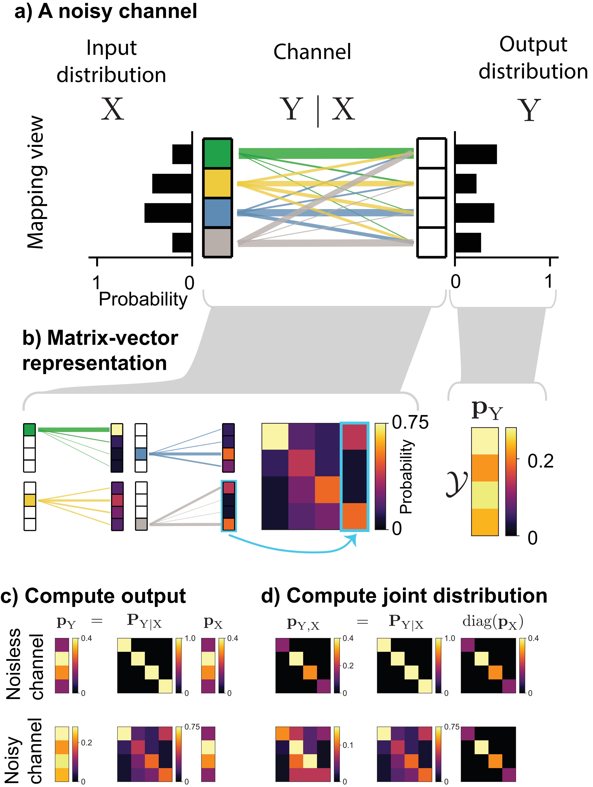
Using the channel matrix, two quantities of interest can be computed. The output distribution can be described by a vector of probabilities \(\mathbf{p}_{\mathrm{Y}}\), and it can be computed from the input distribution \(\mathbf{p}_{\mathrm{X}}\) by multiplying it by the channel matrix (Figure 10c):
\[\begin{aligned} \mathbf{p}_\mathrm{Y} = \mathbf{P}_{\mathrm{Y}\mid \mathrm{X}}\mathbf{p}_\mathrm{X} \end{aligned}\]
The joint distribution \(\mathbf{P}_{\mathrm{X}, \mathrm{Y}}\) is also useful because it is needed in the computation of conditional entropy and mutual information. It can be found by putting in the input probability vector \(\mathbf{p}_\mathrm{X}\) along the diagonal of a matrix and multiplying by the channel matrix (Figure 10d):
\[\begin{aligned} \mathbf{P}_{\mathrm{X}, \mathrm{Y}} = \mathbf{P}_{\mathrm{Y}\mid \mathrm{X}}\text{diag}(\mathbf{p}_\mathrm{X}) \end{aligned}\]
Unlike \(\mathbf{P}_{\mathrm{Y}\mid \mathrm{X}}\), for which each column is a probability distribution and sums to \(1\), all entries of \(\mathbf{P}_{\mathrm{X}, \mathrm{Y}}\) together sum to \(1\) since the whole matrix is a joint probability distribution.
3.2 Entropy and mutual information in channels
In a channel, entropy, conditional entropy, and mutual information take on more specific roles: they distinguish signal from noise and quantify how much information survives transmission. Our goal is to recover as much of \(H(\mathrm{X})\), the average information at the channel inputs, as possible. The mutual information between \(\mathrm{X}\) and \(\mathrm{Y}\) measures the information shared between a transmitted and received message. The higher it is, the more information has successfully been transmitted to the receiver.
A key distinction in channels is between information that helps us infer the state of the source and randomness that is irrelevant—both are measured in bits, since the definition of entropy is based on probabilities alone. In the case of a noisy channel, \(p_{\smash{\mathrm{X}}\vphantom{\hat{T}}}\) contains the information we’re interested in, and \(p_{\smash{\mathrm{Y}\mid \mathrm{X}}\vphantom{\hat{T}}}\) is the noise imparted by the channel. Both \(H(\mathrm{X})\) (the input) and \(H(\mathrm{Y}\mid \mathrm{X})\) (the noise) qualify as information in the mathematical sense, even though only the former is useful. The entropy of the channel output \(H(\mathrm{Y})\) will usually contain both information about the input and noise.
The information transmitted through a channel depends on both the channel itself (\(p_{\smash{\mathrm{Y}\mid \mathrm{X}}\vphantom{\hat{T}}}\)) and the distribution over the channel’s inputs (\(p_{\smash{\mathrm{X}}\vphantom{\hat{T}}}\)). Two factors govern how much information is transmitted through the channel: the noise level of individual channel inputs, and how much the outputs of different inputs overlap.
The noise level of different inputs can be computed from knowledge of the channel alone without knowledge of the input distribution. For input \(x\), the noise at the output is \(H(\mathrm{Y}\mid x)\). Assuming a particular input distribution allows us to compute the average noise imparted by the channel \(H(\mathrm{Y}\mid \mathrm{X})\). Input distributions that put more probability on channel inputs that are less noisy will tend to transmit more information.
The other important factor is how much different inputs overlap at the channel output. The output overlap of a particular input with other inputs, averaged over all outputs is \(H(x \mid \mathrm{Y})\). Unlike the noise level in a particular input, this overlap can only be calculated with respect to a particular input distribution, because it requires knowledge of the joint distribution of inputs and outputs. By averaging over all inputs, we can calculate the average uncertainty about which channel input gave rise to a certain output, \(H(\mathrm{X}\mid y)\). Averaging over both inputs and outputs gives \(H(\mathrm{X}\mid \mathrm{Y})\). Channels that have less overlap at the output will tend to transmit more information.
Examples of noisy and non-noisy channels
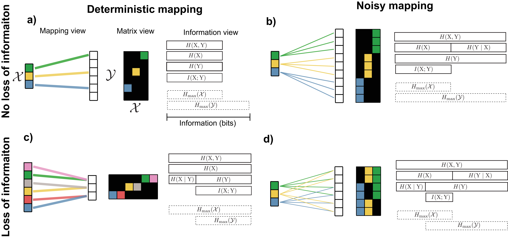
We now give specific examples of channels that are either noisy or noiseless and either lose information about the inputs or preserve all of it. For simplicity, here we assume distribution over inputs is uniform. The ideal information transmission system would lose no information and be able to recover \(\mathrm{X}\) exactly given an output \(\mathrm{Y}\), which would mean that \(I(\mathrm{X};\mathrm{Y}) = H(\mathrm{X})\). One way this can occur is in a noiseless channel in which the channel maps every input to a unique output (Figure 11a). In this situation, \(H(\mathrm{X}) = H(\mathrm{Y}) = I(\mathrm{X}; \mathrm{Y})\) and \(H(\mathrm{Y}\mid \mathrm{X}) = H(\mathrm{X}\mid \mathrm{Y}) = 0\), meaning that we could perfectly predict \(\mathrm{X}\) given \(\mathrm{Y}\) (or \(\mathrm{Y}\) given \(\mathrm{X}\)).
However, a channel does not need to be noiseless to completely preserve input information. All input information can be recovered through a noisy channel, so long as each input maps to outputs that don’t overlap with those of other inputs (Figure 11b). In this scenario, \(H(\mathrm{Y}\mid \mathrm{X})\) is no longer equal to zero, because even knowing what the input was, we cannot predict exactly how the noise of the channel manifests at the output. In contrast, \(H(\mathrm{X}\mid \mathrm{Y}) = 0\) because given the output, we can know exactly what the input was. \(H(\mathrm{Y})\) is greater than \(H(\mathrm{X})\) because it includes all of the entropy \(H(\mathrm{X})\) along with some additional entropy caused by noise.
Alternatively, even if the channel imparts no noise, information can be lost. This happens if multiple inputs map to the same output (Figure 11c). It thus becomes impossible to tell with certainty from the output \(\mathrm{Y}\) which input was used, or equivalently, \(H(\mathrm{X}\mid \mathrm{Y}) > 0\).
Finally, the most general situation, which will be encountered most in practice, is the one in which there is both a loss of information (\(H(\mathrm{X}\mid \mathrm{Y}) > 0\) or equivalently \(H(\mathrm{X}) > I(\mathrm{X}; \mathrm{Y})\)) and noise present in the output (\(H(\mathrm{Y}\mid \mathrm{X}) > 0\) or \(H(\mathrm{Y}) > I(\mathrm{X}; \mathrm{Y})\)) (Figure 11d). Although Figure 11d shows a scenario where \(H(\mathrm{Y}) > H(\mathrm{X})\), this can also occur even if \(H(\mathrm{X}) = H(\mathrm{Y})\): some of the input entropy is replaced by noise.
To summarize: \(I(\mathrm{X}; \mathrm{Y})\) is the average amount of information successfully transmitted through the channel. \(H(\mathrm{Y}\mid \mathrm{X})\) is the average noise at the output–uncertainty about what the output outcome will be knowing the specific input used. \(H(\mathrm{X}\mid \mathrm{Y})\) is uncertainty in which input was used knowing the output outcome, which can arise from deterministic many-to-one mappings in the channel or inputs whose noise overlaps at the output.
The different ways of decomposing mutual information presented in Section 2.7 have more specific interpretations in the context of a noisy channel:
\[\begin{aligned} I(\mathrm{X}; \mathrm{Y}) = H(\mathrm{X}) - H(\mathrm{X}\mid \mathrm{Y}) \end{aligned}\]
Can now be interpreted as the average input information, minus the uncertainty at the output about which message was sent, which is determined by how much different messages overlap at the channel’s output.
\[\begin{aligned} I(\mathrm{X}; \mathrm{Y}) = H(\mathrm{Y}) - H(\mathrm{Y}\mid \mathrm{X}) \end{aligned}\]
Can be interpreted as the total uncertainty at the output (the sum of input uncertainty and noise), minus the noise in the received messages.
3.3 Data processing inequality
The Data Processing Inequality states that no physical or computational operation can increase the information about a signal. In the context of channels, this means that if we had a series of channels, each of which mapped from one random variable to another, information about the first random variable can only be preserved or lost at each step, and thus we can only be equally or more uncertain after each channel.
Mathematically, if we have \(\mathrm{A} \rightarrow \mathrm{B} \rightarrow \mathrm{C}\), where each arrow represents a channel, we say that these three variables form a Markov chain. The theorem states that:
\[\begin{aligned} I(\mathrm{A}; \mathrm{B}) \geq I(\mathrm{A}; \mathrm{C}) \end{aligned}\]
and this statement can be generalized to greater than three random variables.
Maximizing information throughput
If all channel inputs are 1) equally noisy and 2) have outputs that overlap with the outputs from other inputs equally, then a uniform distribution over the inputs will maximize the amount of information the channel transmits. There may also be other input distributions which transmit the same amount of information, but redistributing probability cannot lower noise (since all inputs are equally noisy), and any information transmission gains had by decreasing the overlap at certain outputs will be offset by increased overlap at other outputs.
In the more general case, both of these conditions will not be met, which leads to the questions: 1) What are the optimal input distribution(s) \(\mathbf{p}_{\mathrm{X}}^*\) for maximizing the channel’s information throughput? 2) How much information will the channel be able to transmit if this optimal input distribution is used? The answer to the latter question is called the channel capacity and is denoted by \(C\).
The quantities can be found by solving an optimization problem:
\[\begin{align} \label{capacity_eqn} \mathbf{p}_{\mathrm{X}}^* = \underset{\mathcal{P}_{\mathcal{X}}}{\arg \max} \: I(\mathrm{X}; \mathrm{Y}) \\ C = \underset{\mathcal{P}_{\mathcal{X}}}{\max} \: I(\mathrm{X}; \mathrm{Y}) \\ \end{align}\]
Where \(\mathcal{P}_{\mathcal{X}}\) is the set of probability distribution on the space \(\mathcal{X}\). In the case where \(\mathcal{X}\) is discrete, this will be the set of nonnegative vectors that whose sum is \(1\) (formally known as the probability simplex). The computational details of how to solve this optimization problem can be found in Appendix \(\ref{optimizing_mutual_info}\). Here, we focus on the intuition behind its objective function.
Mutual information can be decomposed as \(I(\mathrm{X}; \mathrm{Y}) = H(\mathrm{Y}) - H(\mathrm{Y}\mid \mathrm{X})\), and this decomposition is useful in analyzing the competing goals of this optimization problem. Consider the noisy channel shown in Figure 12a, which has two inputs that are noisy but map to distinct outputs, and one input that is less noisy but has outputs that overlap more with the outputs of the other inputs.
If we were to not maximize mutual information, but instead only maximize the first term in the decomposition, \(H(\mathrm{Y})\), probability would be placed on inputs in such a way that the output probability was as uniformly distributed as possible. This is beneficial because it means more of the channel’s outputs are utilized, which means different channel inputs have more space to avoid overlapping on the same outputs. In the case of this channel, this would result in putting half the probability mass on each of the two noisy but non-overlapping inputs, which would result in \(1\) bit of information gained with each use of the channel (Figure 12b).
Alternatively, if we were to maximize only the second term, \(H(\mathrm{Y}\mid \mathrm{X})\) would be minimized, leading to probability being placed on the inputs in such a way as to select for the least noisy inputs. Since the middle input is less noisy than the other two, this would result in all of the probability mass being placed on it, which would lead to no information being transmitted.
By optimizing the full objective, these goals are balanced: some probability is placed on the least noisy middle input, while some probability is placed on the noisier inputs, which makes use of the full output space. This leads to an information transmission of \(1.13\) bits, which is the channel capacity \(C\).
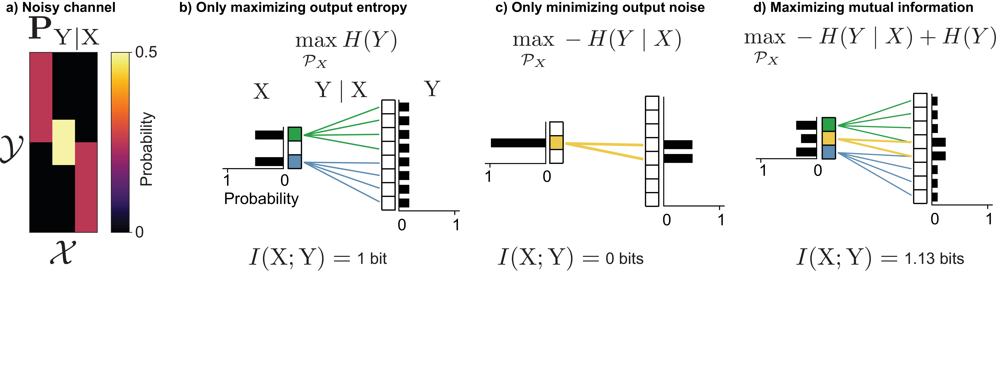
4 Channel coding
In information transmission problems, there will usually be a source of random events \(\mathrm{S}\). We will refer to the outcomes of \(\mathrm{S}\) as messages. We don’t have any control over the messages or the channel, but we do have the ability to design a function called an encoder, which will map certain messages to certain channel inputs.
This section addresses the problem of channel coding: how should we design encoders to maximize information transmission and minimize the probability of incorrectly inferring the source message? We begin with the design of encoders and how well different sources and channels match one another. We then present the noisy channel coding theorem, which establishes the fundamental limits of reliable transmission. Finally, we discuss the role of decoders in recovering the original message from noisy channel outputs.
4.1 Encoders
An encoder is a deterministic function that maps messages from the source to the inputs of a channel. We’ll make the assumption, unless otherwise stated, that every message is mapped to a unique input, so no information is lost from \(\mathrm{S}\) to \(\mathrm{X}\). A good encoder will maximize the mutual information between \(\mathrm{X}\) and \(\mathrm{Y}\), so its goal is to map \(\mathrm{S}\) to \(\mathrm{X}\) in such a way that the distribution of \(\mathrm{X}\) will balance: 1) having probability mass on non-noisy inputs, and 2) spreading probability of the channel outputs as uniformly as possible to avoid different inputs overlapping at the output.
Figure 13a shows a noisy channel which maps each input \(\mathrm{X}=x\) to two possible outputs with equal probability. Our goal is to transmit messages from a non-redundant source (Figure 13b), in which three colors occur with equal probability through a noisy channel, with minimal information loss.
Figure 13c shows a bad way of doing this: using three states in \(\mathcal{X}\) that have overlapping outputs in \(\mathrm{Y}\), which leads to a loss of information that creates ambiguity as to what the original source message was.
Alternatively, we could design an encoder which uses only a subset of the states in \(\mathcal{X}\) that produce disjoint outputs in \(\mathcal{Y}\) (Figure 13d). In this case, there is no loss of information.
This encoder is not unique, since we can randomly permute which state of \(\mathrm{S}\) mapped to which state of \(\mathrm{X}\) and achieve the same mutual information.
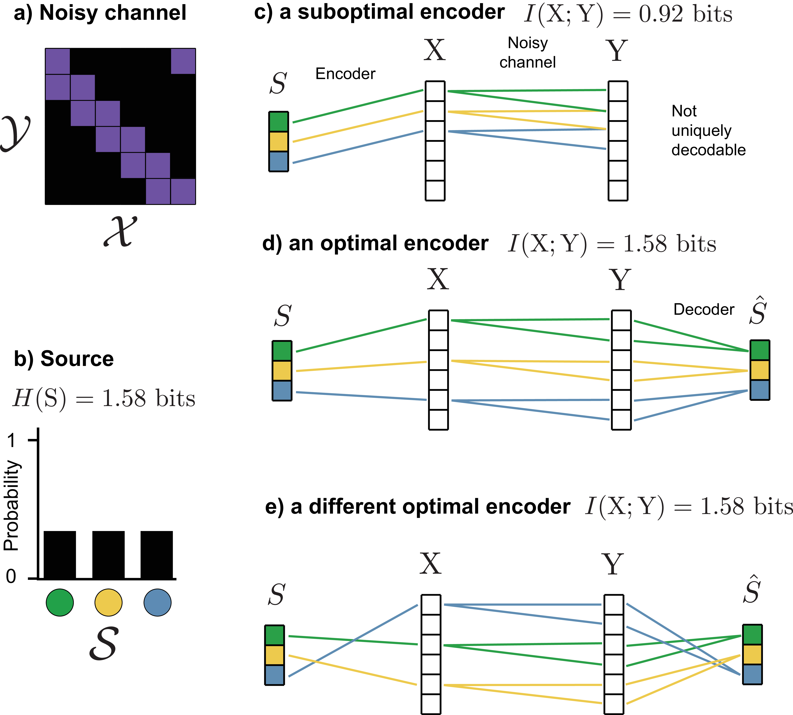
4.1.1 Compatibility of channels and sources
Suppose we are given some arbitrary source, we have multiple channels to choose from, and we can design any type of encoder we want, provided that it only encodes 1 source message at a time. What channel will allow us to transmit the most information? How much information will we be able to transmit? Will this channel also be the best for any other different source?
The answer to the last question is no. Even with freedom to design the encoder as we see fit, some sources are channels are inherently better “matched" to one another. Furthermore, there is no guarantee that for a given source and a given channel that we’ll be able to achieve the channel capacity.
Intuitively, how well a source and channel are "matched" is determined by how well our best encoder maps more probable source outcomes to 1) inputs with less noisy outputs and 2) inputs whose outputs don’t overlap with those of other inputs. The process of creating an encoder to perform this matching is also known as joint source-channel coding.

Figure 14 shows an example of the differences in information transmission that occur when matching different source distributions to different channels. There are two noisy channels (Figure 14a): The first channel (the “symmetric channel") has inputs that are all equally noisy and all have outputs that overlap equally. The second channel (the “asymmetric channel") also has equally noisy inputs, but their outputs are not equally overlapping with one another: it has two pairs of inputs whose outputs overlap less with each other than do the outputs within each pair.
There are also two different sources with the same entropy (Figure 14b). The first source (the “symmetric source") has three equally probably outcomes, while the second source (the “asymmetric source") has two more probable and two less probable outcomes. For channels and sources with a small number of states such as the ones shown here, the optimal encoder can be found by exhaustively searching all possible ways of mapping messages to channel inputs.
For the symmetric channel, the optimal encoder for the symmetric source is able to transmit more information than the optimal encoder for the asymmetric source, but for the asymmetric channel, the reverse is true (Figure 14c). In the latter case, this occurs because the encoder is able to map each of source’s two most highly probable messages (\(\textcolor{#009B55}{\texttt{green}}\) and \(\textcolor{gray}{\texttt{gray}}\)) to distinct subsets of channel inputs that overlap less at the output. This is not possible for the symmetric source, because all of its messages are equally probable.
In contrast, for the symmetric channel, more information can be transmitted about the symmetric source than the asymmetric source. This is because the outputs for all inputs are equally overlapping, which forces the asymmetric source to map highly probable messages to channel outputs with more overlap.
Maximal information transmission
We have seen that the channel capacity \(C\) is determined by the optimal input distribution, and that encoders mapping one message at a time may not reach this capacity. A central result in information theory, the Noisy channel coding theorem, proves that it is possible to transmit information up to the channel capacity for any source/channel pair. The key is encoding not one message at a time, but many messages at once. This changes both the distribution of source messages and the noise per channel input, making them more uniform and easier to match with an encoder.
4.2 The noisy channel coding theorem
Noisy channel coding is one of the central problems in information theory. The noisy channel coding theorem defined the limits of reliable transmission and storage of information using inherently noisy physical components.
The general setup is: There is a source of random messages, which could be human-chosen or the result of some natural random process. The goal is to transmit these messages to a receiver with minimal or no error, but to do so they must pass through a noisy channel.
The noisy channel coding theorem shows that any source/channel pair is able to transmit information at a rate (i.e. information per channel use) up to the channel capacity and in doing so, enable a decoder to infer the true message with arbitrarily small probability of error. It also shows that above the channel capacity, achieving arbitrarily small probability of error is impossible without driving the rate to \(0\).
The analysis and proof of the noisy channel coding theorem break apart noisy channel coding into separate source coding and channel coding steps. This yields five steps: (Figure 15): 1) A compressor takes in the random events, and removes any redundancy, making it a maximum entropy source. 2) The compressed events pass into an encoder, which adds redundancy to try to prevent the loss of information when 3) passing through a noisy channel. 4) The channel output is then fed into a decoder, which attempts to remove any errors introduced by the noisy channel and recover the original message. 5) The compressed messages are decompressed back onto the original probability space.
Steps 2-4 correspond to the random variables:
\(S\): The (compressed) source message
\(\mathrm{X}\): The input to the channel (the encoded message)
\(\mathrm{Y}\): The output of the channel (the received message)
\(\hat{S}\): The estimate of the (compressed) message
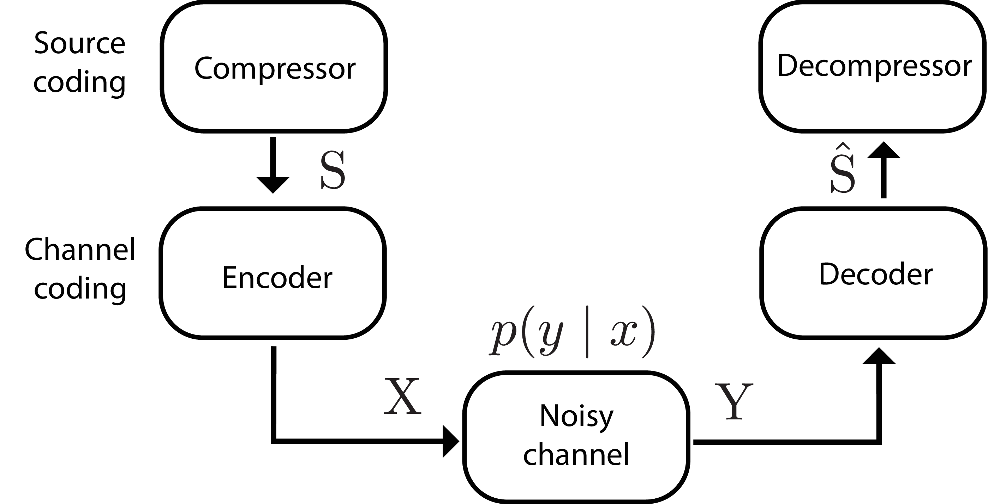
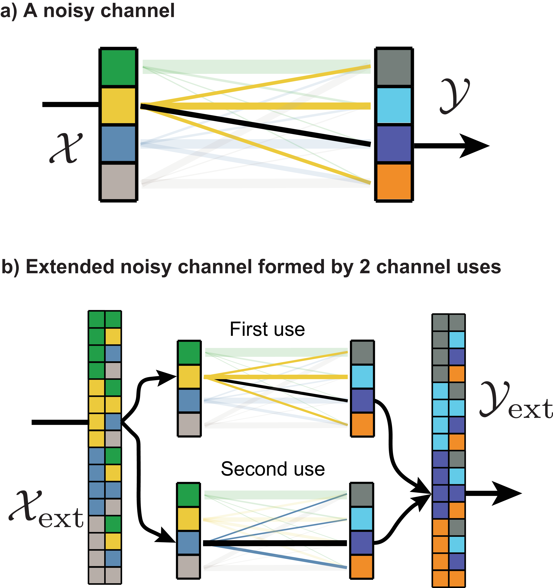
4.2.1 Ignoring compression with block encoders
The result of the noisy channel coding theorem is achieved by using an encoder that doesn’t encode \(1\) message at a time to channel inputs, but rather one that encodes multiple messages at a time. The number of messages is called block length. In practice, an infinitely long block length cannot be used, because the message would never actually transmit. As a result, a noisy channel might not be able to transmit information up to its full capacity for certain sources. There may also be possible performance gains in practice by using joint source-channel coding, as will be discussed in Section 4.3.
We separate compression and encoding (and their inverses) into distinct steps not out of necessity, but for easier analysis. The source-channel separation theorem states that there is no cost to this division–compressors and encoders can be designed just as well separately as they can jointly (in the limit of an infinitely long block length).
Without loss of generality, we can treat \(\mathrm{S}\) as a maximum entropy source and ignore the compression/decompression step. This is because if we have a redundant source, it is possible when using a long block length to perform lossless compression, which yields a maximum entropy source over a much larger state space.
The larger state space of the source means that we’ll also need a channel with a larger state space, which we can form by using an extended noisy channel. This is simply using the channel \(N\) times, and considering a meta-channel whose inputs and outputs are all possible combinations of the original channel’s inputs and outputs (Figure 16).
As a result of this separation and the theorem justifying it, we can disregard the source coding problem (i.e. the compressor and decompressor) and focus only on the channel coding problem (encoder \(\rightarrow\) noisy channel \(\rightarrow\) decoder). Since any source of random events can be compressed into a maximum entropy source (Sec. 2.4), we can simply assume this has already taken place.
4.2.2 Theoretical limits of perfect transmission
The noisy channel coding theorem proved something previously thought impossible: that the probability of error when transmitting a message over a noisy channel and trying to infer its value on the other side could be made arbitrarily small without the rate of information transfer dropping to zero.
To understand this, we start with an encoder \(\rightarrow\) noisy channel \(\rightarrow\) decoder. As shown in Figure 17a, the messages we are trying to send are the outcomes of a series of maximum entropy/non-redundant random events (like colored marbles drawn from an urn with equal probability). The noisy channel transmits binary data, so we will then convert the outcome of each random event to a binary string using an optimal encoder that minimizes the number of bits used. Using binary channels simplifies the analysis, but is not strictly needed. Noisy channels can be over any probability space, continuous or discrete.
These binary strings will be transmitted over a noisy channel, which will, with some probability, flip \(\texttt{0}\)s to \(\texttt{1}\)s and vice versa. If we sent the raw binary messages over this channel, errors will occur and the message on the other side will be interpreted incorrectly as a result of noise displacing and thus destroying some of the usable information in each string. To combat this, before transmitting over the noisy channel, we will add some type of redundancy so that the messages are more robust to the channel’s noise. Adding this redundancy means that the binary strings transmitted will become longer, but the information they contain will be unchanged. Thus, the number of (information) bits will be smaller than the number transmitted (data) bits.
The rate \(R\) at which we transmit data depends on the amount of redundancy added:
\[\begin{aligned} R = \frac{\text{\# source bits}}{\text{\# transmitted bits}} \end{aligned}\]
(Note: This rate is not exactly the same as the rate used in rate-distortion theory (Sec. 2.10). Rate as used here is defined as the compression of a transmitted message, whereas for rate-distortion theory it describes the absolute amount of information about a particular source.)
Next, the redundant message passes through a noisy channel. The channel shown in Figure 17a shows a binary symmetric channel in which \(\texttt{0}\)s and \(\texttt{1}\)s transmit correctly with probability \(\frac{4}{5}\) and flip with probability \(\frac{1}{5}\).
Finally, a decoder interprets the received message and attempts to correct any errors and reconstruct the original message.
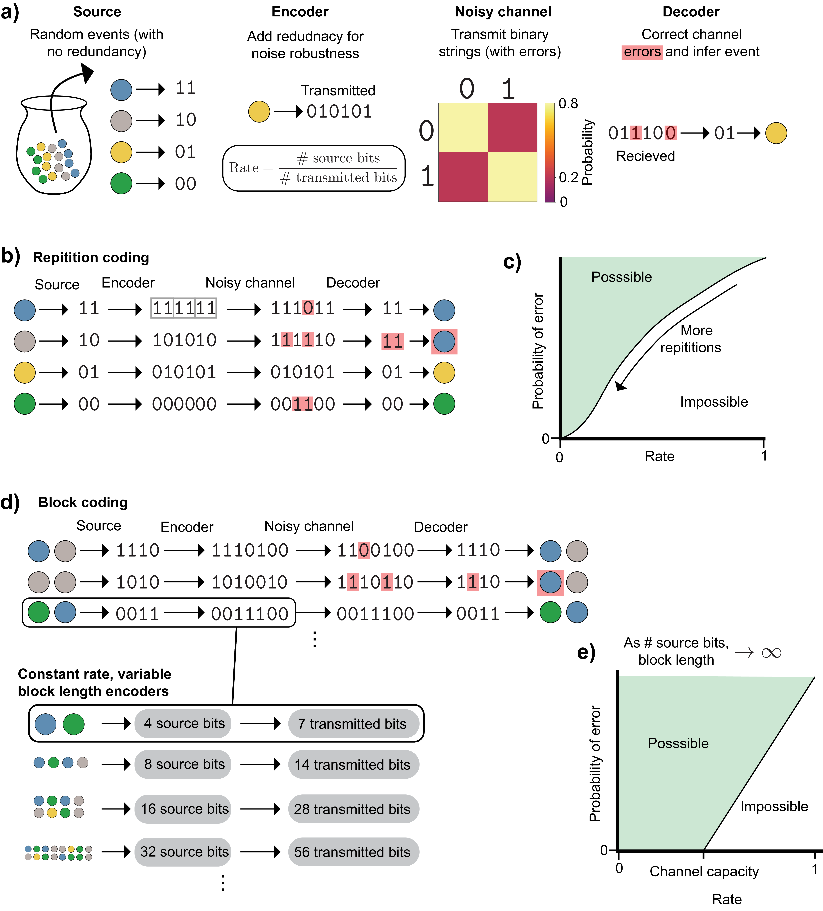
A naive approach to this problem is through repetition coding (Figure 17b). Here, the message is repeated \(N\) times before being sent through the channel, and the decoder chooses the bit at each position that occurred the greatest number of times in the repetition-coded message. The wrong message can be received if more than half of the bits in a given position flip. To lower the probability of this happening, we can increase the number of repetitions. This reduces the probability of error, but in doing so lengthens the message needed for each event and thus lowers the rate at which information can be transmitted. As we specify a lower and lower maximal acceptable probability of message error, the rate at which information is sent approaches \(0\) (Figure 17c).
The noisy channel coding theorem proved that we can do better than this. To do so, we must send multiple messages at once, also known as block coding. In the case of this binary channel, this is done by taking multiple binary messages, and passing them through an encoder that maps to a single binary string. The encoder in Figure 17d is called a Hamming code, which is a good choice for this problem, but not specifically needed for the noisy channel coding theorem. Similar to the previous case, those bits are then transmitted and the decoder attempts to correct errors and reconstruct the original message.
As the bottom panel of Figure 17d shows, by transmitting a sequence of random events as a single outcome, we can increase the block length of our transmission system while leaving the rate unchanged by keeping the ratio of source bits and transmitted bits constant.
The noisy channel coding theorem considers the performance of channels as the block length goes to infinity, and it has two important implications (Figure 17e):
Encoder/decoder pairs exist which can transmit messages with arbitrarily small probability of error at nonzero rates up to the channel capacity
At rates above the channel capacity, no encoder/decoder pairs can transmit messages with arbitrarily small error probability
The theorem does not state how one can find the appropriate encoders/decoders to achieve this performance, only that they exist. Specifically, it shows that the average performance of randomly constructed encoders achieves this, which implies that at least one of the individual randomly constructed encoders can achieve it. Finding good performing codes that can also be decoded is not straightforward based on this theorem alone, in part because extending the block length makes naive decoding algorithms exponentially more complex. It took several decades of research to discover codes for binary channels that approach the performance the theorem implies.
4.2.3 The benefits of long block length
The noisy channel coding theorem shows that information can be transmitted at a rate up to the channel capacity in the asymptotic setting of infinitely long block lengths. This leads to the question, what is it about long block lengths that makes this achievable, even for channel/source pairs (like the ones in Figure 14) that cannot reach the channel capacity in the short block length setting?
The answer is that long block lengths make both channels and sources more uniform in such a way that the problem of finding an encoder that optimally maps source messages to channel inputs becomes trivial: it can accomplished by simply picking a fixed random mapping. As discussed in Section 4.1.1, a good encoder will map the most probable source messages to channel inputs that are the least noisy (minimize \(H(\mathrm{Y}\mid \mathrm{X})\)) as well as choosing inputs that minimize the overlap of messages at the channel output (minimize \(H(\mathrm{X}\mid \mathrm{Y})\)).
By extending a source to a long block length (i.e. encoding a sequence of messages rather than individual messages), all sources will start to resemble maximum entropy sources, which have uniform probability over all messages. This happens either because: 1) individual messages are already coming from a maximum entropy source, and this will remain true at any block length. 2) Redundant sources will produce equally probable typical sequences (discussed in Section 2.4.1) onto which nearly all of the probability mass will concentrate, and non-typical sequences can be ignored because they contain vanishingly small probability. Thus, a redundant source, when extended, behaves like a maximum entropy source over a smaller number of possible messages (the typical set).
A similar uniformity arises when a noisy channel is extended: both the noisiness of each channel input and the overlap of its outputs with other channel inputs (assuming a uniform input distribution) become the same for all inputs. The noisiness of a channel input \(x\) is measured by its point-wise conditional entropy \(H(\mathrm{Y}\mid x)\). A noiseless input would have a value of \(0\), and noisy inputs have positive values. By looking at the distribution of point-wise conditional entropies for each channel input, we can assess how heterogeneous the channel inputs are in terms of their noisiness (Figure 18). The absolute noise level will always increase as we make extended noisy channels with longer block lengths, but the relative amount of noise in each input becomes increasingly close to the block length \(N\) times the average noisiness of the non-extended channel, \(H(\mathrm{Y}\mid \mathrm{X})\). This is a consequence of the Central Limit Theorem, as shown in Appendix 8.3.
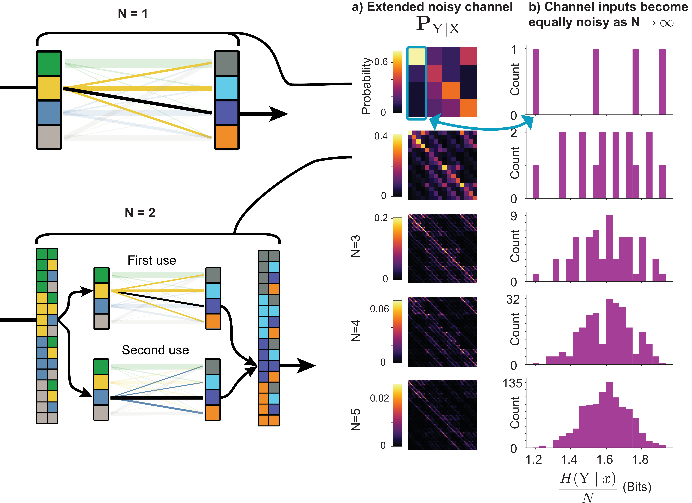
In addition to this uniformity in the noise level of different channel inputs, the overlap of different channel inputs becomes uniform as block length increases. Mathematically, this means that \(H(x \mid \mathrm{Y})\) tends toward the same value for all choices of \(x\). Like the increasing uniformity of noise for each channel input in the previous paragraph, this phenomenon is a consequence of the Law of Large Numbers and can be shown mathematically with a proof similar to that in Appendix 8.3. The only difference is that unlike the noise of different inputs, the overlap of different inputs requires knowledge of the joint distribution \(p_{\smash{\mathrm{X}, \mathrm{Y}}\vphantom{\hat{T}}}\). It thus depends on a particular choice of input distribution, since \(p_{\smash{\mathrm{X}, \mathrm{Y}}\vphantom{\hat{T}}} = p_{\smash{\mathrm{Y}\mid \mathrm{X}}\vphantom{\hat{T}}}p_{\smash{\mathrm{X}}\vphantom{\hat{T}}}\). However, since we know that all sources will produce equally probable messages as \(N \rightarrow \infty\), we can simply assume that \(p_{\smash{\mathrm{X}}\vphantom{\hat{T}}}\) is uniform. This means that the matrix \(\mathbf{P}_{\mathrm{X}, \mathrm{Y}}\) is equal to \(\mathbf{P}_{\mathrm{Y}\mid \mathrm{X}}\) multiplied by a scalar constant.
Extended noisy channels still have some inputs that are especially noisy and some that are especially quiet, as well as those that are more or less overlapping. For example, the extended noisy channel input that corresponds to using the most noisy input of the non-extended channel for each transmission still may be much noisier than the average extended channel input. Outliers like this don’t go away as \(N \rightarrow \infty\); they simply cease to matter because they are outnumbered.
However, since we can never actually have an infinite block length in practice, in many situations information transmission can do better than a fixed, random encoder, by shifting more probable messages onto less noisy, less-overlapping inputs. This is possible because when \(N\) is not infinite, any redundant source will not produce equally probable messages. How to do this in practice will be explored in the next section.
4.3 Noisy channel coding in practice
Section 4.1.1 showed that encoding one message at a time may not reach channel capacity. Section 4.2 showed that extending the block length to infinity guarantees an encoder that can. Here we turn to the practical intermediate setting: designing encoders for maximal information transmission with finite block length.
4.3.1 Longer, but not infinite, block length
The first important question is, how do the asymptotic changes that improve our ability to match channels and sources manifest as \(N\) increases? These changes, the transformation of a source into an extended source with uniform probability over its messages and a channel into an extended noisy channel with equally noisy inputs that overlap equally at the output (for a uniform input distribution), are not only possible as \(N \rightarrow \infty\). Some source/channel pairs, like the one shown in Figure 13, already have this property with a block length of \(1\). However, this represents a special case that will usually not be true.
Generally, a redundant source, when extended, will produce messages that are more uniform in probability as \(N\) increases (as shown in Figure 3). Similarly, the inputs of a noisy channel will become closer to each other in their noise level and overlap at the output (for equally probably inputs) as \(N\) increases.
There will initially be large performance gains for increases in block length beyond \(N=1\) that rapidly diminish as block length continues to increase. Different theoretical results provide performance bounds that demonstrate this type of performance. For example, it has been proven that there are block codes in which the probability of decoding error is bounded by an exponentially decreasing function ([2] p171). Similarly, for a fixed probability of error, the minimum discrepancy between the channel capacity and the actual amount of information transmitted decreases proportional to \(\frac{1}{\sqrt{N}}\) [5].
4.3.2 Optimizing encoders
Since sources will not produce equally probable messages and not all inputs of a channel will be equivalent, in many cases we will be able to increase information throughput by designing encoders that map more probable messages to less noisy inputs that overlap less with the outputs from other inputs [5]. This is also known as joint source-channel coding, to differentiate it from the setting where an encoder is designed based on the assumption that it will be encoding a maximum entropy source.
We can do this by solving the following optimization problem:
\[\begin{aligned} \underset{f}{\arg \max} \: I(f(\mathrm{S}); \mathrm{Y}) \\ \end{aligned}\]
Where \(f(\cdot)\) is the encoder function that maps from the space of possible messages \(\mathcal{S}\) to the the space of channel inputs \(\mathcal{X}\).
When \(\mathcal{S}\) and \(\mathcal{X}\) are discrete spaces, this can be a challenging optimization problem, because it is not amenable to gradient-based optimization. If we consider this problem in matrix form, \(\mathbf{p}_{\mathrm{S}}\) is a vector of probabilities of different messages, and \(\mathbf{P}_{\mathrm{f}}\) is noiseless channel that maps \(\mathbf{p}_{\mathrm{S}}\) to \(\mathbf{p}_{\mathrm{X}}\). Since the channel is noiseless, each column has exactly one entry with probability \(1\), and all other entries are \(0\), like the channels shown in Figure 11a,c.
A naive approach to solving this optimization problem is to use a brute force search, in which the mutual information is calculated for every possible encoder matrix. However, this quickly becomes computationally intractable, since the number of possible encoder matrices grows with the factorial of the number of channel inputs.
Another possibility is to instead use stochastic encoders, which consist of replacing the deterministic encoder function \(f(\cdot)\) with a conditional probability distribution \(p(x \mid s)\). In the matrix view, this corresponds to matrices which can have an arbitrary number of nonzero elements along each column, so long as they are all positive and each column sums to \(1\), like the matrices in Figure 11b,d.
Since every deterministic encoder represents a specific case of a larger class of stochastic encoders, stochastic encoders can do as well or better in principle. In practice, they often do worse, though there are certain conditions under which they’re superior [6], [7]. This remains an area of active research.
The major advantage that stochastic encoders do have is that they are much more amenable to optimization. Since each column of a stochastic encoder matrix (or any channel) is a conditional probability distribution it can be optimized with respect individual probabilities using the same numerical optimization tools used to find the optimal input distribution for a fixed channel (Appendix 7).
Continuous encoders
Encoders can also be optimized for continuous sources and channels. That is, a source is represented by a probability density function, and encoder is a continuous function (if it is deterministic) or a conditional probability density function (if it is stochastic). In this setting, the entropies become differential entropies, which have a less clear intuitive interpretation and can in some cases take on infinite values (Section 2.9). However, the gradients of these entropies are well defined and do not suffer from such mathematical difficulties, making gradient-based optimization possible [8]. Still, there remain many difficulties to optimizing mutual information in both continuous and discrete settings, particularly in high-dimensional settings, and this remains an active area of research [9].
4.3.3 Variable channels and the cliff effect
Throughout the discussion of channels and encoders, we’ve made the implicit assumption that the channel’s noise characteristics are known and fixed, and that any encoder we’ve designed will be deployed on source channel combinations exactly like those for which it was designed. In practice, this may not always be true, and we may encounter a phenomenon known as the cliff effect, which is a rapid degradation in performance when the noise characteristics of the channel deviate from the ones for which the encoder was designed [5]. The results of the noisy channel coding theorem do not provide any guidance about how to design encoders that are robust to this type of situation, and this too remains an active area of research.
4.4 Decoders
Without a proper encoder, we may incur an unnecessary loss of information in the noisy channel. However, even with an optimal encoder, there remains the challenge of inferring the original message \(\mathrm{S}\) from the channel output \(\mathrm{Y}\). This is the job of the decoder, a function or conditional probability distribution which forms an estimate of the original source message \(\hat{\mathrm{S}}\). Encoders and decoders must be designed together, and the noise characteristics of the channel must be considered to achieve good performance.
The channel output will contain both source information \(I(\mathrm{X}; \mathrm{Y})\) and noise added by the channel \(H(\mathrm{Y}\mid \mathrm{X})\). An optimal decoder will get rid of the latter, mapping all noisy versions of a particular message \(p(y \mid x)\) back to a correct estimate of the original message \(s = \hat{s}\). In practice, our decoder may not be able to eliminate all of the noise \(H(\mathrm{Y}\mid \mathrm{S})\) or preserve all the signal \(I(\hat{\mathrm{S}}; \mathrm{S})\): There may be a trade-off between these competing goals.
Preserving the information contained in the received message \(\mathrm{Y}\) is necessary, but not sufficient, for estimating the correct message. To understand why it is necessary, consider the rate distortion curve in Figure 9c. The probability that the estimated source message is not equal to the actual source message is a valid distortion function, and the rate-distortion curve tells us that to improve the best possible average performance on this distortion function, we will need more information. To understand what it is not sufficient, consider that if we had a perfect decoder, we could always permute all of its predictions such that it would be wrong every time. This would give the worst possible distortion, but all the information would remain, because we could always perform the inverse permutation.
As discussed in the previous section, using block encoders and an extended noisy channel can increase the information throughput of a channel (up to the channel capacity). However, this strategy comes at the cost of increasing the complexity of designing a corresponding decoder. Specifically, as we increase the block length, the number of different messages we have to decode increases exponentially: \(|\mathcal{Y}|^N\). A naive decoder would simply be a lookup table that maps a received message \(\mathrm{Y}\) to an estimate of the source event \(\mathrm{\hat{S}}\), and this lookup table becomes exponentially large with increasing block length. The best encoder-decoder pairs are thus semi-random, giving them the advantages of random encoder construction with the potential for cleverly designed decoding algorithms that can do better than the exponential complexity of the naive approach. There is not a known formula for designing such encoder-decoder pairs that works across different types of channels.
5 Code availability
The code used to produce the figures and high-resolution versions of the figures can be found at https://doi.org/10.5281/zenodo.6647779
6 Acknowledgements
We thank Matt Thomson for alerting H.P. to the existence of information theory, and in particular the wonderful textbook [2] by David Mackay that made learning accessible and interesting, Chenling Antelope Xu for being an insightful and thorough member of a study group of that book, Tom Courtade for providing feedback and clarifying concepts, and Leyla Kabuli and Tiffany Chien for their extremely helpful feedback in the preparation of this manuscript.
7 Numerical optimization of channel input distribution
Computing the optimal input distribution for a noisy channel can be used not only to design encoders that provide maximal information throughput, but also to figure out what the channel’s capacity is. In some cases we may be able to use analytical properties of the channel (e.g. Gaussian noise with zero mean known variance) to perform this computation. In other cases, we can find this distribution by maximizing the channel’s mutual information with respect to the input probabilities ([2] p169). Mathematically:
\[\begin{aligned} \mathbf{p}_{\mathrm{X}}^* = \underset{\mathcal{P}_{\mathcal{X}}}{\arg \max} \: I(\mathrm{X}; \mathrm{Y}) \\ C = \underset{\mathcal{P}_{\mathcal{X}}}{\max} \: I(\mathrm{X}; \mathrm{Y}) \\ \end{aligned}\]
This optimization problem can be solved, and the optimal distribution/channel capacity computed, using numerical optimization techniques such as gradient ascent. Mutual information is a concave function of the input probabilities for a fixed channel, so gradient ascent over the input probabilities is guaranteed to find the global maximum with a proper learning rate.
We solve this problem using projected ascent, which consists of applying the following updates:
\[\begin{aligned} \mathbf{p}_{\mathrm{X}}^{k+1} = \text{proj}(\mathbf{p}_{\mathrm{X}}^{k} + \lambda \nabla_{\mathbf{p}_{\mathrm{X}}} I(\mathrm{X}, \mathrm{Y})) \end{aligned}\]
Where \(\mathbf{p}_{\mathrm{X}}\) is a vector of probabilities for each state in \(\mathcal{X}\).
The projection operator \(\text{proj}(\cdot)\) enforces the constraints that the probabilities need to be positive and sum to 1. This is done by taking the element-wise maximum of \(\mathbf{p}_{\mathrm{X}}\) and \(\mathbf{0}\) (a vector of all \(0\)s), and then adding enough to each element such that they sum to one. Mathematically:
\[\begin{aligned} \mathbf{p}_{\mathrm{X}} &= \max(\mathbf{p}_{\mathrm{X}}, \mathbf{0}) \\ \mathbf{p}_{\mathrm{X}} &= \mathbf{p}_{\mathrm{X}} + \frac{1 - \sum_{i=1}^{N} p_i}{N} \end{aligned}\]
Where \(N\) is the number of elements in \(\mathbf{p}_{\mathrm{X}}\) and \(p_i\) is the \(i\)th entry of \(\mathbf{p}_{\mathrm{X}}\).
While this heuristic projection step appears to work in practice, we note that there may be better and more theoretically motivated alternatives [10].
8 Proofs
8.1 Proof that joint entropy of two random variables equals sum of individual entropies
\[\begin{aligned} H(\mathrm{X}, \mathrm{Y}) &= \sum_{x \in \mathcal{X}} \sum_{y \in \mathcal{Y}} p(x, y) \log{\frac{1}{p(x, y)}} \\ &= -\sum_{x \in \mathcal{X}} \sum_{y \in \mathcal{Y}} p(x)p(y) \log{\frac{1}{p(x)p(y)}} \\ &= -\sum_{x \in \mathcal{X}} \sum_{y \in \mathcal{Y}} p(x)p(y) \left(\log{\frac{1}{p(x)}} + \log{\frac{1}{p(y)}}\right) \\ &= \left(\sum_{x \in \mathcal{X}} \sum_{y \in \mathcal{Y}} p(x)p(y) \log{\frac{1}{p(x)}}\right) + \left(\sum_{x \in \mathcal{X}} \sum_{y \in \mathcal{Y}} p(x)p(y) \log{\frac{1}{p(y)}} \right) \\ &= \left(\sum_{x \in \mathcal{X}} p(x) \log{\frac{1}{p(x)}} \sum_{y \in \mathcal{Y}}p(y)\right) + \left( \sum_{y \in \mathcal{Y}} p(y) \log{\frac{1}{p(y)}} \sum_{x \in \mathcal{X}}p(x) \right) \end{aligned}\]
Taking advantage of the fact that the sum over any probability distribution is one, this reduces to:
\[\begin{aligned} &= \left(\sum_{x \in \mathcal{X}} p(x) \log{\frac{1}{p(x)}}\right) + \left( \sum_{y \in \mathcal{Y}} p(y) \log{\frac{1}{p(y)}} \right) \\ &= H(\mathrm{X}) + H(\mathrm{Y}) \end{aligned}\]
8.2 Decomposition of mutual information
\[\begin{aligned} I(\mathrm{X}; \mathrm{Y}) &= \sum_{x \in \mathcal{X}} \sum_{y \in \mathcal{Y}} p(x, y)\log \left( \frac{p(x, y)}{p(x)p(y)} \right) \\ &= \sum_{x \in \mathcal{X}} \sum_{y \in \mathcal{Y}} p(x, y)\log \left( \frac{p(y \mid x)}{p(y)} \right) \\ &= \sum_{x \in \mathcal{X}} \sum_{y \in \mathcal{Y}} p(x, y)(- \log p(y) + \log p(y \mid x) ) \\ &= -\left( \sum_{x \in \mathcal{X}} \sum_{y \in \mathcal{Y}} p(x, y)\log p(y) \right) + \left( \sum_{x \in \mathcal{X}} \sum_{y \in \mathcal{Y}} p(x, y)\log p(y \mid x) \right) \\ &= - \left( \sum_{y \in \mathcal{Y}} \left(\sum_{x \in \mathcal{X}} p(x, y)\right) \log p(y) \right) + \left( \sum_{x \in \mathcal{X}} \sum_{y \in \mathcal{Y}} p(x, y)\log p(y \mid x) \right) \\ &= - \left( \sum_{y \in \mathcal{Y}} p(y) \log p(y) \right) + \left( \sum_{x \in \mathcal{X}} \sum_{y \in \mathcal{Y}} p(x, y)\log p(y \mid x) \right) \\ &= H(\mathrm{Y}) - H(\mathrm{Y}\mid \mathrm{X}) \end{aligned}\]
8.3 Proof that block length-normalized extended noisy channel inputs become equally noisy for infinite block length
Since each channel use within the extended noisy channel is independent, the point-wise conditional entropies will add. For a sequence of channel uses where \(x^{(k)}\) represent the input used on the \(k\)th transmission of the non-extended channel:
\[\begin{aligned} H(\mathrm{Y}\mid \mathbf{x}) &= \\ &= H(\mathrm{Y}\mid x^{(1)}, x^{(2)},..., x^{(N)}) \\ &= H(\mathrm{Y}\mid x^{(1)}) + H(\mathrm{Y}\mid x^{(2)}) + ... + H(\mathrm{Y}\mid x^{(N)}) \end{aligned}\]
Where \(\mathbf{x} = x^{(1)}, x^{(2)}, ...\) represents the input used on each channel use. These too are independent random variables, since the input chosen on one channel use is independent of subsequent channel uses. Thus, we can take a probability-weighted average over the choice of channel input, yielding:
\[\begin{aligned} \sum_{\mathbf{x} \in \mathbf{\mathcal{X}^N}} p(\mathbf{x}) H(\mathrm{Y}\mid \mathbf{x}) &= \left(\sum_{\mathbf{x} \in \mathbf{\mathcal{X}^N}} p(\mathbf{x}) H(\mathrm{Y}\mid x^{(1)}) \right) + \left(\sum_{\mathbf{x} \in \mathbf{\mathcal{X}^N}} p(\mathbf{x})H(\mathrm{Y}\mid x^{(2)})\right) + ... \\ &= \left(\sum_{x^{(1)} \in \mathcal{X}} p(x^{(1)}) H(\mathrm{Y}\mid x^{(1)}) \left[\prod_{i=2}^{N}\sum_{x^{(i)} \in \mathcal{X}} p(x^{(i)}) \right]\right) + \\ & \left(\sum_{x^{(2)} \in \mathcal{X}} p(x^{(2)}) H(\mathrm{Y}\mid x^{(2)}) \left[\sum_{x^{(1)} \in \mathcal{X}}p(x^{(1)})\prod_{i=3}^{N}\sum_{x^{(i)} \in \mathcal{X}} p(x^{(i)}) \right]\right) ... \end{aligned}\]
By using the fact the sum of a probability distribution is equal to one, this reduces to:
\[\begin{aligned} & \left(\sum_{x^{(1)} \in \mathcal{X}} p(x^{(1)}) H(\mathrm{Y}\mid x^{(1)})\right) + \left(\sum_{x^{(2)} \in \mathcal{X}} p(x^{(2)}) H(\mathrm{Y}\mid x^{(2)})\right) + ... \\ &= H(\mathrm{Y}\mid \mathrm{X}^{(1)}) + H(\mathrm{Y}\mid \mathrm{X}^{(2)}) + ... \\ &= \sum_{k=1}^N H(\mathrm{Y}\mid \mathrm{X}) \end{aligned}\]
Since each term in this sum is identical, dividing by \(N\) gives exactly \(H(\mathrm{Y}\mid \mathrm{X})\): the block length-normalized noise of any extended channel input equals the average noise of the non-extended channel, for any block length \(N\).
Cite this paper
If you find this work useful, please cite:
Reference
H. Pinkard and L. Waller, "A visual introduction to information theory," arXiv preprint, 2024.
BibTeX
@article{pinkard2024visual,
title={A visual introduction to information theory},
author={Pinkard, Henry and Waller, Laura},
journal={arXiv preprint},
year={2024}
}